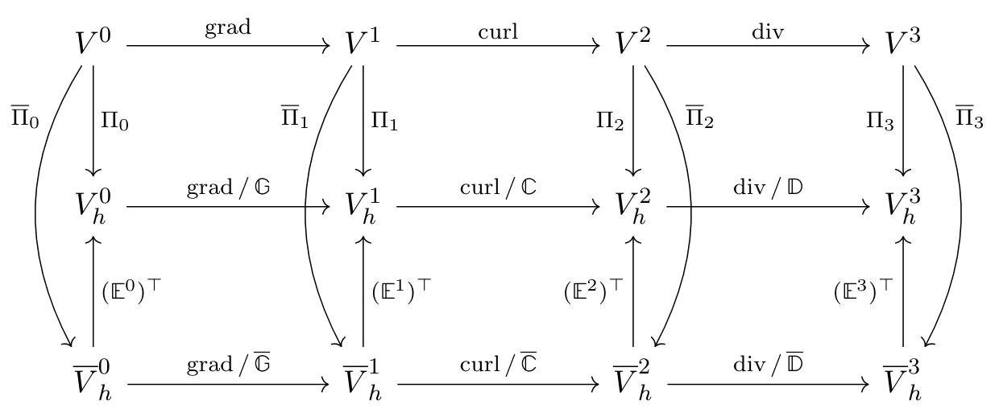

FEEC#
Derham complex#
- class struphy.feec.psydac_derham.DiscreteDerham(V0: TensorFemSpace, V1: VectorFemSpace, V2: VectorFemSpace, V3: TensorFemSpace)[source]#
Bases:
objectDiscrete 3D de Rham sequence built from four FE spaces.
Used internally by
Derham(viaDerham.init_derham) to create the base FE spaces and derivative operators before boundary, polar, and projector augmentations are added.The sequence is represented as
V0 --grad--> V1 --curl--> V2 --div--> V3where
V0is anH1-conforming scalar space,V1anHcurlvector space,V2anHdivvector space, andV3anL2scalar space.The auxiliary space (H^1)^3 for vector fields is also built for projection and polar extraction purposes, but it is not part of the proper de Rham sequence.
Moreover, the 1D FEM spaces (serial, not distributed) in each direction are built from the corresponding 3D spaces, and stored as attributes for building Kronecker matrices.
- Parameters:
V0 (TensorFemSpace) – First space of the de Rham sequence : H1 space
V1 (VectorFemSpace) – Second space of the de Rham sequence : Hcurl space
V2 (VectorFemSpace) – Third space of the de Rham sequence : Hdiv space
V3 (TensorFemSpace) – Fourth space of the de Rham sequence : L2 space
Notes
On construction, differential operators are created and attached to the input spaces as convenience attributes:
V0.gradandV0.diffV1.curlandV1.diffV2.divandV2.diff
- property dim: int#
Dimension of the physical and logical domains, which are assumed to be the same.
- property V0: TensorFemSpace#
H1 space
- Type:
First space of the de Rham sequence
- property V1: VectorFemSpace#
Hcurl space
- Type:
Second space of the de Rham sequence
- property V2: VectorFemSpace#
Hdiv space
- Type:
Third space of the de Rham sequence
- property V3: TensorFemSpace#
L2 space
- Type:
Fourth space of the de Rham sequence
- property Vv: VectorFemSpace#
Auxiliary H1^3 space for vector fields, used for projection and polar extraction purposes.
- property spaces: tuple[TensorFemSpace | VectorFemSpace, ...]#
Spaces of the proper de Rham sequence (excluding Hvec).
- property derivatives_as_matrices#
Differential operators of the De Rham sequence as LinearOperator objects.
- property derivatives#
Differential operators of the De Rham sequence as DiffOperator objects.
Those are objects with domain and codomain properties that are FemSpace, they act on FemField (they take a FemField of their domain as input and return a FemField of their codomain.
- property H1_1d_serial: tuple[TensorFemSpace, TensorFemSpace, TensorFemSpace]#
The 1D H1 spaces in each direction (no domain decomposition), built from the corresponding 3D spaces.
- property L2_1d_serial: tuple[TensorFemSpace, TensorFemSpace, TensorFemSpace]#
The 1D L2 spaces in each direction (no domain decomposition), built from the corresponding 3D spaces.
- projectors(*, kind='global', nquads=None) tuple[GlobalGeometricProjector, ...][source]#
Projectors mapping callable functions of the physical coordinates to a corresponding FemField object in the De Rham sequence.
- Parameters:
kind (str) – Type of the projection : at the moment, only global is accepted and returns geometric commuting projectors based on interpolation/histopolation for the De Rham sequence (GlobalGeometricProjector objects).
nquads (list(int) | tuple(int)) – Number of quadrature points along each direction, to be used in Gauss quadrature rule for computing the (approximated) degrees of freedom.
- Returns:
P0, …, Pn – Projectors that can be called on any callable function that maps from the physical space to R (scalar case) or R^d (vector case) and returns a FemField belonging to the i-th space of the De Rham sequence
- Return type:
callables
- __weakref__#
list of weak references to the object (if defined)
- class struphy.feec.psydac_derham.SplineAttributes1D(femspace: TensorFemSpace | VectorFemSpace, nquads: tuple[int, int, int], nquads_proj: tuple[int, int, int], polar_splines: bool = False, local_projectors: bool = False)[source]#
Bases:
objectContainer for 1D spline metadata extracted from a 3D FE space.
This helper precomputes and stores per-direction information needed by projection operators, quadrature-based assembly, and spline evaluation kernels. It supports both scalar (TensorFemSpace) and vector-valued (VectorFemSpace) spaces.
- Parameters:
femspace (TensorFemSpace | VectorFemSpace) – Finite-element space from which the 1D spline information is derived.
nquads (tuple[int, int, int]) – Number of quadrature points in each logical direction
(eta_1, eta_2, eta_3)for numerical integration grids.nquads_proj (tuple[int, int, int]) – Number of quadrature points in each logical direction used to build projection point/weight sets.
polar_splines (bool, default=False) – Polar spline regularity flag.
Falseselects standard tensor-product splines, whileTrueenables C1 polar splines (including the optional shift of points neareta_1 = 0where required).local_projectors (bool, default=False) – If
True, also computes quasi-interpolation point/weight grids used by local commuting projectors.
Notes
Data layout depends on the input space type:
scalar space: each attribute is indexed by direction;
vector space: each attribute is indexed by component, then direction.
The class stores:
spline descriptors (number of basis functions, spline kind),
projection grids (points, weights, sub-interval markers),
optional local-projector grids,
quadrature grids (points, weights, spans, basis values).
- property femspace: TensorFemSpace | VectorFemSpace#
The 3d tensor product spline space (scalar or vector valued) from which the 1d spline space information is derived.
- property nquads: tuple[int, int, int]#
The number of quadrature points in each direction for numerical integration.
- property nquads_proj: tuple[int, int, int]#
The number of quadrature points in each direction for the projection.
- property polar_splines: bool#
The polar splines flag.
- property local_projectors: bool#
Whether to use local projectors.
- property tensor_spaces: tuple[TensorFemSpace, ...]#
The underlying tensor product spaces (one per component for vector-valued spaces).
- property nbasis: tuple[tuple[int]]#
Tuple of number of basis functions in each direction for each component of the vector space.
- property spline_types: tuple[tuple[str]]#
Tuple of spline types in each direction (‘B’ or ‘M’) for each component of the vector space.
- property spline_types_pyccel: tuple[ndarray]#
Tuple of spline types in each direction as integers (0 for ‘B’, 1 for ‘M’) for each component of the vector space.
- property proj_grid_pts: tuple[tuple[ndarray]]#
Tuple of projection grid points in each direction for each component of the vector space.
- property proj_grid_wts: tuple[tuple[ndarray]]#
Tuple of projection grid weights in each direction for each component of the vector space.
- property proj_grid_subs: tuple[tuple[ndarray]]#
Tuple of projection grid sub-interval indices in each direction for each component of the vector space.
- property proj_loc_grid_pts: tuple[tuple[ndarray]] | None#
Tuple of local projection grid points in each direction for each component of the vector space.
- property proj_loc_grid_wts: tuple[tuple[ndarray]] | None#
Tuple of local projection grid weights in each direction for each component of the vector space.
- property quad_grid_pts: tuple[tuple[ndarray]]#
Tuple of quadrature grid points in each direction for each component of the vector space. The indexing is [global element, local quadrature point]. The length of the first dimension is the number of elements (cells).
- property quad_grid_wts: tuple[tuple[ndarray]]#
Tuple of quadrature grid weights in each direction for each component of the vector space. The indexing is [global element, local quadrature point]. The length of the first dimension is the number of elements (cells).
- property quad_grid_spans: tuple[tuple[ndarray]]#
Tuple of quadrature grid basis function spans in each direction for each component of the vector space. The span is the index of the last non-vanishing spline on each grid element (cell). The length of the returned array is the number of elements (cells).
- property quad_grid_bases: tuple[tuple[ndarray]]#
Tuple of quadrature grid basis function values in each direction for each component of the vector space. Indexing is [global element, basis function, derivative, local quadrature point]. The length of the first dimension is the number of elements (cells).
- __weakref__#
list of weak references to the object (if defined)
- class struphy.feec.psydac_derham.Derham(grid: TensorProductGrid, options: DerhamOptions, comm: SerialComm | None = None, domain: Domain | None = None, *, domain_decomposition: DomainDecomposition | None = None)[source]#
Bases:
objectHigh-level discrete de Rham complex on the 3D logical unit cube.
The class builds a tensor-product base complex through
DiscreteDerhamand augments it with optional boundary enforcement, optional C1 polar extraction operators, and commuting projectors. It also stores convenient metadata (1D spline attributes, decomposition helpers, index arrays) used by initialization, evaluation, and kernel interfaces.
- Parameters:
grid (TensorProductGrid) – The FEEC grid.
options (DerhamOptions) – The options for building the discrete de Rham sequence, including spline degrees, boundary conditions, quadrature options, polar spline options, and projector options.
comm (Intracomm) – MPI communicator (sub_comm if clones are used).
domain (Domain, optional) – The Struphy domain object for evaluating the mapping F : [0, 1]^3 –> R^3 and the corresponding metric coefficients.
domain_decomposition (DomainDecomposition, optional) – Prescribed MPI decomposition of the elements, e.g.
fine_derham.domain_decomposition.coarsen(...)for an aligned multigrid level. Must matchgrid.num_elementsand the periodicity fromoptions.bcs, and be built oncomm. If None (default), it is computed fromcommandgrid.mpi_dims_mask.
Notes
The underlying base sequence is
V0 --grad--> V1 --curl--> V2 --div--> V3.An auxiliary
H1vecFEM space is also built for vector-field projection and polar extraction machinery.- property grid: TensorProductGrid#
The FEEC grid.
- property options: DerhamOptions#
The DerhamOptions object containing the input options for the Derham sequence construction.
- property comm#
MPI communicator.
- property domain: Domain | None#
Mapping from logical unit cube to physical domain (only needed in case of polar splines with polar_splines is True).
- property num_elements: tuple[int, int, int]#
List of number of elements (=cells) in each direction.
- property degree: tuple[int, int, int]#
List of B-spline degrees in each direction.
- property bcs: tuple[None | tuple[Literal['free', 'dirichlet'], Literal['free', 'dirichlet']], None | tuple[Literal['free', 'dirichlet'], Literal['free', 'dirichlet']], None | tuple[Literal['free', 'dirichlet'], Literal['free', 'dirichlet']]]#
Tuple of boundary conditions in each direction. Each entry is either None (periodic) or a tuple with two entries (left and right boundary), “dirichlet” or “free” (clamped splines).
- property nquads: tuple[int, int, int]#
List of number of Gauss-Legendre quadrature points in each direction (default = degree, leads to exact integration of degree 2p-1 polynomials).
- property nquads_proj: tuple[int, int, int]#
List of number of Gauss-Legendre quadrature points in histopolation (default = degree + 1) in each direction.
- property mpi_dims_mask: tuple[bool, bool, bool]#
List of bool indicating which dimensions are decomposed in the MPI domain decomposition.
- property with_projectors: bool#
True if global commuting projectors are to be assembled.
- property polar_splines: bool#
C^k smoothness at eta_1=0. Is False for standard tensor product splines and True for C^1 polar splines.
- property polar_poloidal_solver: str#
Solver for the poloidal matrices in the 2D x 1D Kronecker solves of polar projections (“schur”, “lu” or “ilu”).
- property with_local_projectors: bool#
True if local projectors are to be used instead of the default global ones.
- property V0fem: TensorFemSpace#
Psydac’s finite element space for 0-forms (scalar H1).
- property V1fem: VectorFemSpace#
Psydac’s finite element space for 1-forms (vector Hcurl).
- property V2fem: VectorFemSpace#
Psydac’s finite element space for 2-forms (vector Hdiv).
- property V3fem: TensorFemSpace#
Psydac’s finite element space for 3-forms (scalar L2).
- property Vvfem: VectorFemSpace#
Psydac’s finite element space for vector H1 fields (not part of the proper de Rham sequence, but useful for the projectors and polar extraction operators).
- property H1_1d_serial: tuple[SplineSpace, SplineSpace, SplineSpace]#
Tuple of 1D H1 spline spaces in each direction (no domain decomposition).
- property L2_1d_serial: tuple[SplineSpace, SplineSpace, SplineSpace]#
Tuple of 1D L2 spline spaces in each direction (no domain decomposition).
- property fem_spaces: dict[str, TensorFemSpace | VectorFemSpace]#
Dictionary mapping form names to their corresponding finite element spaces.
- property V0splines: SplineAttributes1D#
1D spline attributes for the 0-form space (scalar H1).
- property V1splines: SplineAttributes1D#
1D spline attributes for the 1-form space (vector Hcurl).
- property V2splines: SplineAttributes1D#
1D spline attributes for the 2-form space (vector Hdiv).
- property V3splines: SplineAttributes1D#
1D spline attributes for the 3-form space (scalar L2).
- property Vvsplines: SplineAttributes1D#
1D spline attributes for the H1^3 space (not part of the proper de Rham sequence, but useful for the projectors and polar extraction operators).
- property H1_1d_serial_splines: tuple[SplineAttributes1D]#
Tuple of 1D spline attributes for the H1_1d_serial spaces in each direction.
- property L2_1d_serial_splines: tuple[SplineAttributes1D]#
Tuple of 1D spline attributes for the L2_1d_serial spaces in each direction.
- property spline_attributes: dict[str, SplineAttributes1D]#
Dictionary mapping form names to their corresponding 1D spline attributes.
- property V0: StencilVectorSpace#
Coefficient space for 0-forms (scalar H1).
- property V1: BlockVectorSpace#
Coefficient space for 1-forms (vector Hcurl).
- property V2: BlockVectorSpace#
Coefficient space for 2-forms (vector Hdiv).
- property V3: StencilVectorSpace#
Coefficient space for 3-forms (scalar L2).
- property Vv: BlockVectorSpace#
Coefficient space for vector fields in H1^3 (not part of the proper de Rham sequence, but useful for the projectors and polar extraction operators).
- property coeff_spaces: dict[str, StencilVectorSpace | BlockVectorSpace]#
Dictionary mapping form names to their corresponding coefficient spaces.
- property V0pol: StencilVectorSpace | PolarDerhamSpace#
Coefficient space for 0-forms (scalar H1) for polar splines.
- property V1pol: BlockVectorSpace | PolarDerhamSpace#
Coefficient space for 1-forms (vector Hcurl) for polar splines.
- property V2pol: BlockVectorSpace | PolarDerhamSpace#
Coefficient space for 2-forms (vector Hdiv) for polar splines.
- property V3pol: StencilVectorSpace | PolarDerhamSpace#
Coefficient space for 3-forms (scalar L2) for polar splines.
- property Vvpol: BlockVectorSpace | PolarDerhamSpace#
Coefficient space for vector fields in H1^3 for polar splines (not part of the proper de Rham sequence, but useful for the projectors and polar extraction operators).
- property polar_coeff_spaces: dict[str, StencilVectorSpace | BlockVectorSpace | PolarDerhamSpace]#
Dictionary mapping form names to their corresponding coefficient spaces for polar splines.
- property ck_blocks: PolarExtractionBlocksC1 | None#
Polar extraction blocks for C1 polar splines. Is None if polar_splines is False (standard tensor product splines).
- property space_to_form: dict[str, str]#
Dictionary mapping space names to form names. The form names are “0”, “1”, “2”, “3” for the proper de Rham sequence, and “v” for the H1^3 space.
- property grad#
Discrete gradient H1 -> Hcurl.
- property curl#
Discrete curl Hcurl -> Hdiv.
- property div#
Discrete divergence Hdiv -> L2.
- property P0: CommutingProjector | CommutingProjectorLocal#
Commuting projector to 0-forms (interpolation). If self.with_local_projectors is True, the local projector is chosen.
- property P1: CommutingProjector | CommutingProjectorLocal#
Commuting projector to 1-forms (interpolation and histopolation). If self.with_local_projectors is True, the local projector is chosen.
- property P2: CommutingProjector | CommutingProjectorLocal#
Commuting projector to 2-forms (interpolation and histopolation). If self.with_local_projectors is True, the local projector is chosen.
- property P3: CommutingProjector | CommutingProjectorLocal#
Commuting projector to 3-forms (histopolation). If self.with_local_projectors is True, the local projector is chosen.
- property Pv: CommutingProjector | CommutingProjectorLocal#
Commuting projector to H1^3 space (interpolation). If self.with_local_projectors is True, the local projector is chosen.
- property projectors: dict[str, CommutingProjector | CommutingProjectorLocal]#
Dictionary mapping form names to their corresponding projectors. The form names are “0”, “1”, “2”, “3” for the proper de Rham sequence, and “v” for the H1^3 space.
- property P0glob#
Global version of the commuting projector to 0-forms (interpolation). Only available if self.with_local_projectors is True.
- property P1glob#
Global version of the commuting projector to 1-forms (interpolation and histopolation). Only available if self.with_local_projectors is True.
- property P2glob#
Global version of the commuting projector to 2-forms (interpolation and histopolation). Only available if self.with_local_projectors is True.
- property P3glob#
Global version of the commuting projector to 3-forms (histopolation). Only available if self.with_local_projectors is True.
- property Pvglob#
Global version of the commuting projector to H1^3 space (interpolation). Only available if self.with_local_projectors is True.
- property projectors_global#
Dictionary mapping form names to their corresponding global projectors. The form names are “0”, “1”, “2”, “3” for the proper de Rham sequence, and “v” for the H1^3 space. Only available if self.with_local_projectors is True.
- property P0loc#
Local version of the commuting projector to 0-forms (interpolation). Only available if self.with_local_projectors is True.
- property P1loc#
Local version of the commuting projector to 1-forms (interpolation and histopolation). Only available if self.with_local_projectors is True.
- property P2loc#
Local version of the commuting projector to 2-forms (interpolation and histopolation). Only available if self.with_local_projectors is True.
- property P3loc#
Local version of the commuting projector to 3-forms (histopolation). Only available if self.with_local_projectors is True.
- property Pvloc#
Local version of the commuting projector to H1^3 space (interpolation). Only available if self.with_local_projectors is True.
- property projectors_local#
Dictionary mapping form names to their corresponding local projectors. The form names are “0”, “1”, “2”, “3” for the proper de Rham sequence, and “v” for the H1^3 space. Only available if self.with_local_projectors is True.
- property spl_kind: tuple[bool]#
Tuple of bool indicating the kind of spline in each direction (True=periodic, False=clamped).
- property dirichlet_bc: tuple[tuple[bool, bool]]#
Tuple of tuples indicating whether homogeneous Dirichlet boundary conditions are applied at left and right boundary in each direction.
- property breaks#
List of break points (=cell interfaces) in each direction.
- property indN#
List of 2d arrays holding global spline indices (N) in each element in the three directions.
- property indD#
List of 2d arrays holding global spline indices (D) in each element in the three directions.
- property domain_decomposition#
Psydac’s domain decomposition object (same for all vector spaces!).
- property domain_array#
A 2d array[float] of shape (comm.Get_size(), 9). The row index denotes the process number and for n=0,1,2:
domain_array[i, 3*n + 0] holds the LEFT domain boundary of process i in direction eta_(n+1).
domain_array[i, 3*n + 1] holds the RIGHT domain boundary of process i in direction eta_(n+1).
domain_array[i, 3*n + 2] holds the number of cells of process i in direction eta_(n+1).
- property breaks_loc#
The domain local to this process.
- property index_array#
A 2d array[int] of shape (comm.Get_size(), 6). The row index denotes the process number and for n=0,1,2:
arr[i, 2*n + 0] holds the global start index of cells of process i in direction eta_(n+1).
arr[i, 2*n + 1] holds the global end index of cells of process i in direction eta_(n+1).
- property index_array_N#
A 2d array[int] of shape (comm.Get_size(), 6). The row index denotes the process number and for n=0,1,2:
arr[i, 2*n + 0] holds the global start index of B-splines (N) of process i in direction eta_(n+1).
arr[i, 2*n + 1] holds the global end index of B-splines (N) of process i in direction eta_(n+1).
- property index_array_D#
A 2d array[int] of shape (comm.Get_size(), 6). The row index denotes the process number and for n=0,1,2:
arr[i, 2*n + 0] holds the global start index of M-splines (D) of process i in direction eta_(n+1).
arr[i, 2*n + 1] holds the global end index of M-splines (D) of process i in direction eta_(n+1).
- property neighbours#
A 3d array[int] with shape (3,3,3). It contains the 26 neighbouring process ids (rank). This is done in terms of N-spline start/end indices. The i-th index indicates direction eta_(i+1). 0 is a left neighbour, 1 is the same plane as the current process, 2 is a right neighbour. For more detail see _get_neighbours().
- property extraction_ops#
Dictionary holding basis extraction operators, either IdentityOperator or PolarExtractionOperator.
- property dofs_extraction_ops#
Dictionary holding dof extraction operators for commuting projectors, either IdentityOperator or PolarExtractionOperator.
- property boundary_ops#
Dictionary holding essential boundary operators (BoundaryOperator) OR IdentityOperators.
- property grad_bcfree#
Discrete gradient Vh0_pol (H1) -> Vh1_pol (Hcurl) w/o boundary operator.
- property curl_bcfree#
Discrete curl Vh1_pol (Hcurl) -> Vh2_pol (Hdiv) w/o boundary operator.
- property div_bcfree#
Discrete divergence Vh2_pol (Hdiv) -> Vh3_pol (L2) w/o boundary operator.
- property grad_tp#
Discrete gradient on the tensor-product spaces (no polar splines, no boundary operator).
- property curl_tp#
Discrete curl on the tensor-product spaces (no polar splines, no boundary operator).
- property div_tp#
Discrete divergence on the tensor-product spaces (no polar splines, no boundary operator).
- property args_derham: DerhamArguments | CudaDerhamArguments#
Mandatory pusher kernel arguments for the backend used at initialization.
- kernels() tuple[source]#
The kernels called on the data of this complex.
The spline evaluation kernels of
SplineFunction(at markers, on meshgrids and on sparse meshgrids) and the feectools kernels of the 3D stencil data (matrix-vector product, transpose, inner product, axpy), which the FEEC operators and solvers call. Used bycompile_cuda_kernels().
- to_dict() dict[source]#
Serialize the Derham configuration to a dictionary. The MPI communicator is not serialized and set to None.
- classmethod from_dict(dct, comm: SerialComm | None = None) Derham[source]#
Deserialize a Derham configuration from a dictionary. The MPI communicator is set to None.
- init_derham(num_elements: tuple[int, int, int], degree: tuple[int, int, int], spl_kind: tuple[bool, bool, bool], comm=None, mpi_dims_mask: tuple[bool, bool, bool] | None = None, use_feectools: bool = True, domain_decomposition: DomainDecomposition | None = None) DiscreteDerham[source]#
Return a discrete Derham complex. Allows for the use of tiny-feectools.
- Parameters:
num_elements (tuple[int, int, int]) – Number of elements in each direction.
degree (tuple[int, int, int]) – Spline degree in each direction.
spl_kind (tuple[bool, bool, bool]) – Kind of spline in each direction (True=periodic, False=clamped).
comm (mpi4py.MPI.Intracomm) – MPI communicator (within a clone if domain cloning is used, otherwise MPI.COMM_WORLD)
mpi_dims_mask (tuple[bool, bool, bool]) – True if the dimension is to be used in the domain decomposition (=default for each dimension). If mpi_dims_mask[i]=False, the i-th dimension will not be decomposed.
use_feectools (bool) – Use slimmed-down fork feectools of Psydac.
domain_decomposition (DomainDecomposition, optional) – Prescribed decomposition of the elements; if None, it is computed from
commandmpi_dims_mask.
- create_spline_function(name: str, space_id: Literal['H1', 'Hcurl', 'Hdiv', 'L2', 'H1vec'], coeffs: StencilVector | BlockVector | None = None, backgrounds: FieldsBackground | list | None = None, perturbations: Perturbation | list | None = None, domain: Domain | None = None, equil: FluidEquilibrium | None = None, projection: Literal['commuting', 'L2'] = 'commuting')[source]#
Create a callable spline function (
SplineFunction)\[S_h(\boldsymbol \eta) = \sum_{ijk} s_{ijk}\, \Lambda^\alpha_{ijk}(\boldsymbol \eta)\]of the coefficients \(s_{ijk}\) (
coeffs) in the spacespace_idwith the basis functions \(\Lambda^\alpha_{ijk}\) (component-wise for the vector-valued spaces).- Parameters:
name (str) – Field’s key to be used for instance when saving to hdf5 file.
space_id (str) – Space identifier for the field (“H1”, “Hcurl”, “Hdiv”, “L2” or “H1vec”).
coeffs (StencilVector | BlockVector) – The spline coefficients.
backgrounds (FieldsBackground | list) – For the initial condition.
perturbations (Perturbation | list) – For the initial condition.
domain (Domain) – Mapping for pullback/transform of initial condition.
equil (FLuidEquilibrium) – Fluid background used for inital condition.
projection (str) – Projection of the initial condition into the spline space: “commuting” (the commuting projector, default) or “L2” (the L2-orthogonal projection).
- prepare_eval_tp_fixed(grids_1d)[source]#
Obtain knot span indices and spline basis functions evaluated at tensor product grid.
- Parameters:
grids_1d (3-list of 1d arrays) – Points of the tensor product grid.
- Returns:
spans (3-tuple of 2d int arrays) – Knot span indices in each direction in format (n, nq).
bns (3-tuple of 3d float arrays) – Values of degree + 1 non-zero B-Splines at quadrature points in format (n, nq, basis).
bds (3-tuple of 3d float arrays) – Values of degree non-zero D-Splines at quadrature points in format (n, nq, basis).
- __weakref__#
list of weak references to the object (if defined)
- class struphy.feec.psydac_derham.SplineFunction(name: str, space_id: str, derham: Derham, coeffs: StencilVector | BlockVector | None = None, backgrounds: FieldsBackground | list | None = None, perturbations: Perturbation | list | None = None, domain: Domain | None = None, equil: FluidEquilibrium | None = None, projection: Literal['commuting', 'L2'] = 'commuting')[source]#
Bases:
objectInitializes a callable spline function with a method for assigning initial conditions.
The spline function of the coefficients \(s_{ijk}\) (
coeffs) in the space \(V^\alpha_h\) with the basis functions \(\Lambda^\alpha_{ijk}\) (\(\alpha = 0, 3\)), on the logical domain, is\[S_h(\boldsymbol \eta) = \sum_{ijk} s_{ijk}\, \Lambda^\alpha_{ijk}(\boldsymbol \eta)\,,\]and, for the vector-valued spaces (\(\alpha = 1, 2, v\)), component-wise
\[S_{h,\mu}(\boldsymbol \eta) = \sum_{ijk} s_{\mu, ijk}\, \Lambda^\alpha_{\mu, ijk}(\boldsymbol \eta)\,, \qquad \mu = 1, 2, 3\,.\]Calling the spline function returns these logical components (no push-forward to the physical domain). This notation \(S_h\) is used throughout Struphy for a spline function, e.g. evaluated at the marker positions \(S_h(\boldsymbol \eta_p)\).
- Parameters:
name (str) – Field’s key to be used for instance when saving to hdf5 file.
space_id (str) – Space identifier for the field (“H1”, “Hcurl”, “Hdiv”, “L2” or “H1vec”).
derham (struphy.feec.psydac_derham.Derham) – Discrete Derham complex.
coeffs (StencilVector | BlockVector) – The spline coefficients (optional).
backgrounds (FieldsBackground | list) – For the initial condition.
perturbations (Perturbation | list) – For the initial condition.
domain (Domain) – Mapping for pullback/transform of initial condition.
equil (FluidEquilibrium) – Fluid background used for inital condition.
projection (str) – Projection of the initial condition into the spline space: “commuting” (the commuting projector of the Derham, default) or “L2” (the L2-orthogonal projection,
L2Projector, needsdomain).
- __weakref__#
list of weak references to the object (if defined)
- property name#
Name of the field in data container (string).
- property space_id#
‘H1’, ‘Hcurl’, ‘Hdiv’, ‘L2’ or ‘H1vec’.
- Type:
String identifying the continuous space of the field
- property space_key#
‘0’, ‘1’, ‘2’, ‘3’ or ‘v’.
- Type:
String identifying the discrete space of the field
- property derham#
3d Derham complex struphy.feec.psydac_derham.Derham.
- property domain#
Mapping for pullback/transform of initial condition.
- property equil#
Fluid equilibirum used for initial condition.
- property space#
Coefficient space (VectorSpace) of the field.
- property fem_space#
FE space (FemSpace) of the field.
- property ET#
Transposed PolarExtractionOperator (or IdentityOperator) for mapping polar coeffs to polar tensor product rings.
- property vector#
feectools.linalg.stencil.StencilVector or feectools.linalg.block.BlockVector or struphy.polar.basic.PolarVector.
- property starts#
Global indices of the first FE coefficient on the process, in each direction.
- property ends#
Global indices of the last FE coefficient on the process, in each direction.
- property pads#
Paddings for ghost regions, in each direction.
- property nbasis#
Tuple(s) of 1d dimensions for each direction.
- property vector_stencil#
Tensor-product Stencil-/BlockVector corresponding to a copy of self.vector in case of Stencil-/Blockvector
OR
the extracted coefficients in case of PolarVector. Call self.extract_coeffs() beforehand.
- property backgrounds: FieldsBackground | list#
For the initial condition.
- property perturbations: Perturbation | list#
For the initial condition.
- extract_coeffs(update_ghost_regions=True)[source]#
Maps polar coeffs to polar tensor product rings in case of PolarVector (written in-place to self.vector_stencil) and updates ghost regions.
- Parameters:
update_ghost_regions (bool) – If the ghost regions shall be updated (needed in case of non-local acccess, e.g. in field evaluation).
- property projection: str#
Projection of the initial condition into the spline space (“commuting” or “L2”).
- initialize_coeffs(*, backgrounds: FieldsBackground | list | None = None, perturbations: Perturbation | list | None = None, domain: Domain | None = None, equil: FluidEquilibrium | None = None)[source]#
Set the initial conditions for self.vector.
- initialize_coeffs_from_restart_file(file, key)[source]#
Set self.vector from the restart data in the hdf5 file.
The restart data holds the tensor-product coefficients self.vector_stencil (E^T applied to self.vector). In case of a PolarVector, the tp part is read from the outer rings and the polar coeffs are recovered from the inner “polar rings” with the (exact) left inverse of E^T.
- eval_tp_fixed_loc(spans, bases, out=None)[source]#
Spline evaluation on pre-defined grid.
Input spans must be on local process, start <= span <= end.
- Parameters:
spans (3-tuple of 1d int arrays) – Knot span indices in each direction (start <= span <= end).
bases (3-tuple of 2d float arrays) – Values of non-zero eta basis functions at evaluation points indexed by (eta, basis function).
- Returns:
out – 3d array of spline values S_ijk corresponding to the sizes of spans.
- Return type:
array[float]
- __call__(*etas, out=None, tmp=None, squeeze_out=False, local=False)[source]#
Evaluates the spline function on the global domain, unless local=True, in which case the spline function is evaluated only on the local domain, and the rest is set to zero.
- Parameters:
*etas (array-like | tuple)
possible (Logical coordinates at which to evaluate. Two cases are) –
2d numpy array, where coordinates are taken from eta1 = etas[0], eta2 = etas[1], etc. (like markers, one column per point).
list/tuple (eta1, eta2, …), where eta1, eta2, … can be float or array-like of various shapes.
out (array[float] or list) – Array in which to store the values of the spline function at the given point set (list in case of vector-valued spaces).
tmp (array[float]) – Array that has shape the size of the grid that will be used as a temporary for AllReduce, to avoid creating it a each call.
flat_eval (bool) – Whether to do a flat evaluation, i.e. f([e11, e12], [e21, e22]) = [f(e11, e21), f(e12, e22)].
squeeze_out (bool) – Whether to remove singleton dimensions in output “values”.
- Returns:
out – The values of the spline function at the given point set (list in case of vector-valued spaces).
- Return type:
array[float] or list
- struphy.feec.psydac_derham.transform_perturbation(pert_type: str, pert_params: dict, space_key: str, domain: Domain)[source]#
Creates callabe(s) from perturbation parameters.
- Parameters:
pert_type (str) – Class name of the perturbation, see
perturbations.pert_params (dict) – Parameters of the perturbation.
space_key (str) – The p-form representation of the output: ‘0’, ‘1’, ‘2’ ‘3’ or ‘v’.
domain (Domain) – Domain object (mapping).
- Returns:
fun – A callable or list of callables in the space defined by
space_key.- Return type:
list
- struphy.feec.psydac_derham.get_pts_and_wts(space_1d, start, end, n_quad=None, polar_shift=False)[source]#
Obtain local (to MPI process) projection point sets and weights in one grid direction.
- Parameters:
space_1d (SplineSpace) – Psydac object for uni-variate spline space.
start (int) – Start index on current process.
end (int) – End index on current process.
n_quad (int) – Number of quadrature points for Gauss-Legendre histopolation. If None, is set to degree + 1 where degree is the space_1d degree (products of basis functions are integrated exactly).
polar_shift (bool) – Whether to shift the first interpolation point away from 0.0 by 1e-5 (needed only in eta_1 and for polar domains).
- Returns:
pts (2D float array) – Quadrature points (or Greville points for interpolation) in format (ii, iq) = (interval, quadrature point).
wts (2D float array) – Quadrature weights (or 1’s for interpolation) in format (ii, iq) = (interval, quadrature point).
subs (1D int array) – One entry for each interval ii; usually has value 0. A value of 1 indicates that the cell ii is the second subinterval of a split Greville cell (for histopolation with even degree).
- struphy.feec.psydac_derham.get_pts_and_wts_quasi(space_1d: SplineSpace, *, polar_shift: bool = False) tuple[ndarray, ndarray][source]#
Obtain local projection point sets and weights in one grid direction for the quasi-interpolation method. The quasi-interpolation points are \(\nu - \mu +p\) equidistant points \(\{ x^i_j \}_{0 \leq j < \nu - \mu +p}\) in the sub-interval \(Q = [\eta_\mu , \eta_\nu]\) given by:
- begin{itemize}
item Clamped: .. math:
Q = \left\{\begin{array}{lr} [\eta_p = 0, \eta_{p+1}], & i = 0 \,,\\ {[\eta_p = 0, \eta_{p+i}]}, & 0 < i < p-1\,,\\ {[\eta_{i+1}, \eta_{i+p}]}, & p-1 \leq i \leq \hat{n}_N - p\,,\\ {[\eta_{i+1}, \eta_{\hat{n}_N} = 1]}, & \hat{n}_N - p < i < \hat{n}_N -1\,,\\ {[\eta_{\hat{n}_N -1}, \eta_{\hat{n}_N} = 1]}, & i = \hat{n}_N -1 \,. \end{array} \; \right .item Periodic: .. math:
Q = [\eta_{i + 1}, \eta_{i + p}] \:\:\:\:\: \forall \:\: i.
end{itemize}
Which are allways a subset of \(\{-(p-1)h,-(p-1)h + \frac{h}{2}, ..., 1-h - \frac{h}{2},1-h \}\) for the periodic case.
- Parameters:
space_1d (SplineSpace) – Psydac object for uni-variate spline space.
polar_shift (bool) – Whether to shift the first interpolation point away from 0.0 by 1e-5 (needed only in eta_1 and for polar domains).
- Returns:
pts (2D float array) – Quadrature points (or quasi-interpolation points for interpolation) in format (ii, iq) = (interval, quadrature point).
wts (2D float array) – Quadrature weights (or 1’s for interpolation) in format (ii, iq) = (interval, quadrature point).
- struphy.feec.psydac_derham.get_span_and_basis(pts, space)[source]#
Compute the knot span index and the values of degree + 1 basis function at each point in pts.
- Parameters:
pts (np.array) – 2d array of points (ii, iq) = (interval, quadrature point).
space (SplineSpace) – Psydac object, the 1d spline space to be projected.
- Returns:
span (np.array) – 2d array indexed by (n, nq), where n is the interval and nq is the quadrature point in the interval.
basis (np.array) – 3d array of values of basis functions indexed by (n, nq, basis function).
- struphy.feec.psydac_derham.get_weights_local_projector(pts, fem_space)[source]#
Compute the geometric weights for interpolation and histopolation. Should be called only with the grid points for 0-forms.
- Parameters:
pts (np.array) – 3d array of points. Contains the quasi-interpolation points in each direction.
fem_space (SplineSpace) – Psydac object, the 1d spline space to be projected. Should be the 0-form space.
- Returns:
wij (List of np.array) – List of 2d array indexed by (space_direction, i, j), where i determines for which FEEC coefficient this weights are needed. Used for interpolation.
whij (List of np.array) – List of 2d array indexed by (space_direction, i, j), where i determines for which FEEC coefficient this weights are needed. Used for histopolation.
- struphy.feec.psydac_derham.select_basis_local(i, degree, Nbasis, periodic)[source]#
Determines the start and end indices of the basis functions that must be taken from the collocation matrix to compute the geometric weights wij, for any given i.
- Parameters:
i (int) – Index of the wij weights that must be computed.
degree (int) – B-spline degree.
Nbasis (int) – Number of B-spline.
periodic (bool) – Whether we have periodic boundary conditions.
- Returns:
start (int) – Start index of the B-splines that must be consider in the collocation matrix to obtain the wij weights. Inclusive index
end (int) – End index of the B-splines that must be consider in the collocation matrix to obtain the wij weights. Exclusive index
Grids#
- class struphy.topology.grids.TensorProductGrid(num_elements: Tuple[int, int, int] = (24, 10, 1), mpi_dims_mask: Tuple[bool, bool, bool] = (True, True, True))[source]#
Bases:
OptionsBaseGrid as a tensor product of 1d grids.
- Parameters:
num_elements (Tuple[int, int, int]) – Number of elements in each direction.
mpi_dims_mask (Tuple[bool, bool, bool]) – True if the dimension is to be used in the domain decomposition (=default for each dimension). If mpi_dims_mask[i]=False, the i-th dimension will not be decomposed.
- __eq__(other)#
Return self==value.
- __hash__ = None#
Mass Operators (bilinear forms)#
- class struphy.feec.mass.WeightedMassOperators(derham: Derham, domain: Domain, eq_mhd: MHDequilibrium | None = None, matrix_free: bool = False)[source]#
Bases:
objectCollection of pre-defined
struphy.feec.mass.WeightedMassOperator.- Parameters:
derham (Derham) – Discrete de Rham sequence on the logical unit cube.
domain (Geometry) – Mapping from logical unit cube to physical domain and corresponding metric coefficients.
eq_mhd (MHDequilibrium | None) – MHD equilibrium object.
matrix_free (bool) – If set to true will not compute the matrix associated with the operator but directly compute the product when called.
- property domain: Domain#
Mapping from the logical unit cube to the physical domain with corresponding metric coefficients.
- property eq_mhd: MHDequilibrium | None#
MHD equilibrium object.
- property matrix_free: bool#
If set to true will not compute the matrix associated with the operators but directly compute the dot product when called.
- property dry_run: bool#
If True, mass operators created from now on do not allocate (nor assemble) their stencil matrices; only their sizes are computed. Set temporarily by
estimate_mem().
- estimate_mem(names: tuple[str] = ('M0', 'M1', 'M2', 'M3', 'Mv'), print_report: bool = False) dict[str, int][source]#
Estimate the local (per-MPI-rank) memory footprint of mass matrices, in bytes, without allocating them.
Each requested operator is created exactly as by the corresponding property (same weights, hence the same zero-block detection), but with
dry_run=True, so that only the sizes of its stencil matrices are computed, seenbytes. Operators that have already been created (and hence allocated) report their actual size instead; dry-run operators are not kept in the cache.- Parameters:
names (tuple[str]) – Names of the mass operator properties to estimate, e.g.
("M0", "M1").print_report (bool) – Whether to print the breakdown on MPI rank 0.
- Returns:
Mapping
{name: local_bytes}.- Return type:
dict
- allocated_mem() dict[str, int][source]#
Local (per-MPI-rank) memory footprint, in bytes, of the mass matrices that have actually been created so far (i.e. those whose property has been accessed).
- property M0#
Standard mass matrix for 0-forms (H1 space):
\[\mathbb M^0_{ijk, mno} = \int \Lambda^0_{ijk} \Lambda^0_{mno} \sqrt{g} \textnormal{d}\boldsymbol{\eta}.\]
- property M1#
Standard mass matrix for 1-forms (Hcurl space) as 3x3 block matrix indexed by \((\mu, \nu)\):
\[\mathbb M^1_{(\mu,ijk), (\nu,mno)} = \int \vec{\Lambda}^1_{\mu,ijk}\, G^{-1} \vec{\Lambda}^1_{\nu, mno} \sqrt{g} \textnormal{d}\boldsymbol{\eta}.\]
- property M2#
Standard mass matrix for 2-forms (Hdiv space) as 3x3 block matrix indexed by \((\mu, \nu)\):
\[\mathbb M^2_{(\mu,ijk), (\nu,mno)} = \int \vec{\Lambda}^2_{\mu,ijk} G \vec{\Lambda}^2_{\nu, mno} \frac{1}{\sqrt{g}} \textnormal{d}\boldsymbol{\eta}.\]
- property M3#
Standard mass matrix for 3-forms (L2 space):
\[\mathbb M^3_{ijk, mno} = \int \Lambda^3_{ijk}\, \Lambda^3_{mno} \frac{1}{\sqrt{g}}\, \textnormal{d}\boldsymbol{\eta}.\]
- property M3p_inv#
Pressure-weighted mass matrix for 3-forms:
\[\mathbb M^{3,p^{-1}}_{ijk,mno} = \int \Lambda^3_{ijk}\,\Lambda^3_{mno} \frac{1}{p_0\sqrt{g}}\,\mathrm d\boldsymbol\eta.\]Here \(p_0\) is the equilibrium pressure. This operator is used for the quadratic pressure energy of linear MHD perturbations.
- property M3q0#
Mass matrix for 3-forms weighted with the square root of the equilibrium pressure, \(q_0 = \sqrt{p_0}\):
\[\mathbb M^3_{q_0, ijk,mno} = \int \Lambda^3_{ijk}\,\Lambda^3_{mno} \frac{q_0}{\sqrt{g}}\,\mathrm d\boldsymbol\eta.\]This operator couples the perturbation of \(q\) to the velocity in the linear models with the variable \(q\) (pressure perturbation \(\tilde p = 2 q_0 \tilde q\)).
- property Mv#
Standard mass matrix for vector 0-forms (H1vec space) as 3x3 block matrix indexed by \((\mu, \nu)\):
\[\mathbb M^v_{(\mu,ijk), (\nu,mno)} = \int \vec{\Lambda}^v_{\mu,ijk} G \vec{\Lambda}^v_{\nu, mno} \sqrt{g} \textnormal{d}\boldsymbol{\eta}.\]
- property M2stab_for_rot#
Stabilization matrix for the rot-problem u2 + B2 x u2 = G*f2 as 3x3 block matrix indexed by \((\mu, \nu)\):
\[\mathbb M^2_{(\mu,ijk), (\nu,mno)} = \int \vec{\Lambda}^2_{\mu,ijk} \vec{\Lambda}^2_{\nu, mno} \frac{1}{\sqrt{g}} \textnormal{d}\boldsymbol{\eta}.\]
- property M1n#
Mass matrix
\[\mathbb M^{1,n}_{(\mu,ijk), (\nu,mno)} = \int n^0_{\textnormal{eq}}(\boldsymbol{\eta}) \vec{\Lambda}^1_{\mu,ijk} G^{-1} \vec{\Lambda}^1_{\nu,mno} \sqrt{g} \textnormal{d}\boldsymbol{\eta}.\]where \(n^0_{\textnormal{eq}}(\boldsymbol{\eta})\) is an MHD equilibrium density (0-form).
- property M2n#
Mass matrix
\[\mathbb M^{2,n}_{(\mu,ijk), (\nu,mno)} = \int n^0_{\textnormal{eq}}(\boldsymbol{\eta}) \vec{\Lambda}^2_{\mu,ijk} G \vec{\Lambda}^2_{\nu,mno} \frac{1}{\sqrt{g}} \textnormal{d}\boldsymbol{\eta}.\]where \(n^0_{\textnormal{eq}}(\boldsymbol{\eta})\) is an MHD equilibrium density (0-form).
- property M2gyro#
Mass matrix
\[\mathbb M^{2,\textnormal{gyro}}_{(\mu,ijk), (\nu,mno)} = \int \frac{\|B_0(\boldsymbol{\eta})\|^2}{n^0_{\textnormal{eq}}(\boldsymbol{\eta})} \vec{\Lambda}^2_{\mu,ijk} \left(G - \hat b^1_0 (\hat b^1_0)^\top \right) \vec{\Lambda}^2_{\nu,mno} \frac{1}{\sqrt{g}} \textnormal{d}\boldsymbol{\eta},\]where \(\hat b^1_0\) are the covariant (1-form) components of the unit vector along \(\mathbf B_0\). For 2-forms \(\mathbf j, \mathbf j'\) it is the discrete \(\int (\mathbf J \times \mathbf B_0) \cdot (\mathbf J' \times \mathbf B_0) / n^0_{\textnormal{eq}} \,\textnormal d \mathbf x\), the counterpart of
M1gyroon \(H(\textnormal{div})\).
- property Mvn#
Mass matrix
\[\mathbb M^{v,n}_{(\mu,ijk), (\nu,mno)} = \int n^0_{\textnormal{eq}}(\boldsymbol{\eta}) \vec{\Lambda}^v_{\mu,ijk} G \vec{\Lambda}^v_{\nu,mno} \sqrt{g} \textnormal{d}\boldsymbol{\eta}.\]where \(n^0_{\textnormal{eq}}(\boldsymbol{\eta})\) is an MHD equilibrium density (0-form).
- property M1ninv#
Mass matrix
\[\mathbb M^{1,\frac{1}{n}}_{(\mu,ijk), (\nu,mno)} = \int \frac{1}{n^0_{\textnormal{eq}}(\boldsymbol{\eta})} \vec{\Lambda}^1_{\mu,ijk} G^{-1} \vec{\Lambda}^1_{\nu,mno} \sqrt{g} \textnormal{d}\boldsymbol{\eta}.\]where \(n^0_{\textnormal{eq}}(\boldsymbol{\eta})\) is an MHD equilibrium density (0-form).
- property M1J#
Mass matrix
\[\mathbb M^{1,J}_{(\mu,ijk), (\nu,mno)} = \int \vec{\Lambda}^1_{\mu,ijk} G^{-1} \mathcal{R}(J) \vec{\Lambda}^2_{\nu,mno} \textnormal{d}\boldsymbol{\eta}.\]with the rotation matrix
\[\mathcal{R}(J)_{\alpha,\nu} := \epsilon_{\alpha\beta\nu} J^2_{\textnormal{eq},\beta},\qquad s.t. \qquad \mathcal{R}(J) \vec{v} = \vec{J}^2_{\textnormal{eq}} \times \vec{v},\]where \(\epsilon_{\alpha \beta \nu}\) stands for the Levi-Civita tensor and \(J^2_{\textnormal{eq}, \beta}\) is the \(\beta\)-component of the MHD equilibrium current density (2-form).
- property M2J#
Mass matrix
\[\mathbb M^{2,J}_{(\mu,ijk), (\nu,mno)} = \int \vec{\Lambda}^2_{\mu,ijk} \mathcal{R}(J) \vec{\Lambda}^2_{\nu,mno} \frac{1}{\sqrt{g}} \textnormal{d}\boldsymbol{\eta}.\]with the rotation matrix
\[\mathcal{R}(J)_{\alpha,\nu} := \epsilon_{\alpha\beta\nu} J^2_{\textnormal{eq},\beta},\qquad s.t. \qquad \mathcal{R}(J) \vec{v} = \vec{J}^2_{\textnormal{eq}} \times \vec{v},\]where \(\epsilon_{\alpha \beta \nu}\) stands for the Levi-Civita tensor and \(J^2_{\textnormal{eq}, \beta}\) is the \(\beta\)-component of the MHD equilibrium current density (2-form).
- property M21J#
Mixed mass matrix from 1-forms to 2-forms
\[\mathbb M^{21,J}_{(\mu,ijk), (\nu,mno)} = \int \vec{\Lambda}^2_{\mu,ijk} \mathcal{R}(J) G^{-1} \vec{\Lambda}^1_{\nu,mno} \textnormal{d}\boldsymbol{\eta},\]with the rotation matrix \(\mathcal{R}(J)\) of
M2J, such that \(\mathbf v^\top \mathbb M^{21,J} \mathbf b = \int \mathbf V \cdot (\mathbf J_\textnormal{eq} \times \mathbf B)\, \textnormal d \mathbf x\) for a 2-form \(\mathbf V\) and a 1-form \(\mathbf B\). The 1-form counterpart ofM2J(which acts on 2-forms).
- property MvJ#
Mass matrix
\[\mathbb M^{v,J}_{(\mu,ijk), (\nu,mno)} = \int \vec{\Lambda}^v_{\mu,ijk} \mathcal{R}(J) \vec{\Lambda}^v_{\nu,mno} \textnormal{d}\boldsymbol{\eta}.\]with the rotation matrix
\[\mathcal{R}(J)_{\alpha,\nu} := \epsilon_{\alpha\beta\nu} J^2_{\textnormal{eq},\beta},\qquad s.t. \qquad \mathcal{R}(J) \vec{v} = \vec{J}^2_{\textnormal{eq}} \times \vec{v},\]where \(\epsilon_{\alpha \beta \nu}\) stands for the Levi-Civita tensor and \(J^2_{\textnormal{eq}, \beta}\) is the \(\beta\)-component of the MHD equilibrium current density (2-form).
- property M2B_div0#
Mass matrix
\[\mathbb M^{2,B}_{(\mu,ijk), (\nu,mno)} = \int \vec{\Lambda}^2_{\mu,ijk} \mathcal{R}(B) \vec{\Lambda}^2_{\nu,mno} \frac{1}{\sqrt{g}} \textnormal{d}\boldsymbol{\eta}.\]with the rotation matrix
\[\mathcal{R}(B)_{\alpha,\nu} := \epsilon_{\alpha\beta\nu} B^2_{\textnormal{eq},\beta},\qquad s.t. \qquad \mathcal{R}(B) \vec{v} = \vec{B}^2_{\textnormal{eq}} \times \vec{v},\]where \(\epsilon_{\alpha \beta \nu}\) stands for the Levi-Civita tensor and \(B^2_{\textnormal{eq}, \beta}\) is the \(\beta\)-component of the MHD equilibrium magnetic field (2-form).
- property M2B#
Mass matrix
\[\mathbb M^{2,B}_{(\mu,ijk), (\nu,mno)} = \int \vec{\Lambda}^2_{\mu,ijk} \mathcal{R}(B) \vec{\Lambda}^2_{\nu,mno} \frac{1}{\sqrt{g}} \textnormal{d}\boldsymbol{\eta}.\]with the rotation matrix
\[\mathcal{R}(B)_{\alpha,\nu} := \epsilon_{\alpha\beta\nu} B^2_{\textnormal{eq},\beta},\qquad s.t. \qquad \mathcal{R}(B) \vec{v} = \vec{B}^2_{\textnormal{eq}} \times \vec{v},\]where \(\epsilon_{\alpha \beta \nu}\) stands for the Levi-Civita tensor and \(B^2_{\textnormal{eq}, \beta}\) is the \(\beta\)-component of the MHD equilibrium magnetic field (2-form).
- property M2Bn#
Mass matrix
\[\mathbb M^{2,BN}_{(\mu,ijk), (\nu,mno)} = \int \vec{\Lambda}^2_{\mu,ijk} \mathcal{R}(B) \vec{\Lambda}^2_{\nu,mno} \frac{1}{n^0_{\textnormal{eq}}(\boldsymbol{\eta})} \frac{1}{\sqrt{g}} \textnormal{d}\boldsymbol{\eta}.\]with the rotation matrix
\[\mathcal{R}(B)_{\alpha,\nu} := \epsilon_{\alpha\beta\nu} B^2_{\textnormal{eq},\beta},\qquad s.t. \qquad \mathcal{R}(B) \vec{v} = \vec{B}^2_{\textnormal{eq}} \times \vec{v},\]where \(\epsilon_{\alpha \beta \nu}\) stands for the Levi-Civita tensor and \(B^2_{\textnormal{eq}, \beta}\) is the \(\beta\)-component of the MHD equilibrium magnetic field (2-form).
- property M1Bninv#
Mass matrix
\[\mathbb M^{1,B\frac{1}{n}}_{(\mu,ijk), (\nu,mno)} = \int \frac{1}{n^0_{\textnormal{eq}}(\boldsymbol{\eta})} \vec{\Lambda}^1_{\mu,ijk} G^{-1} \mathcal{R}(B)_{\alpha,\gamma} G^{-1}_{\gamma,\nu} \vec{\Lambda}^1_{\nu,mno} \sqrt{g} \textnormal{d}\boldsymbol{\eta}.\]with the rotation matrix
\[\mathcal{R}(B)_{\alpha,\nu} := \epsilon_{\alpha\beta\nu} B^2_{\textnormal{eq},\beta},\qquad s.t. \qquad \mathcal{R}(B) \vec{v} = \vec{B}^2_{\textnormal{eq}} \times \vec{v},\]where \(\epsilon_{\alpha \beta \nu}\) stands for the Levi-Civita tensor and \(B^2_{\textnormal{eq}, \beta}\) is the \(\beta\)-component of the MHD equilibrium magnetic field (2-form).
- property M1para#
Mass matrix
\[\mathbb M^{1,\parallel}_{(\mu,ijk), (\nu,mno)} = \int \vec{\Lambda}^1_{\mu,ijk} b_0 b_0^\top \vec{\Lambda}^1_{\nu,mno} \sqrt{g} \textnormal{d}\boldsymbol{\eta}.\]
- property M1perp#
Mass matrix
\[\mathbb M^{1,\perp}_{(\mu,ijk), (\nu,mno)} = \int \vec{\Lambda}^1_{\mu,ijk} \left(G^{-1} - b_0 b_0^\top \right) \vec{\Lambda}^1_{\nu,mno} \sqrt{g} \textnormal{d}\boldsymbol{\eta}.\]
- property M1para_MHDeq#
Mass matrix
\[\mathbb M^{1,\parallel}_{(\mu,ijk), (\nu,mno)} = \int \frac{n^0_{\textnormal{eq}}(\boldsymbol{\eta})}{\|B_0(\boldsymbol{\eta})\|^2} \vec{\Lambda}^1_{\mu,ijk} b_0 b_0^\top \vec{\Lambda}^1_{\nu,mno} \sqrt{g} \textnormal{d}\boldsymbol{\eta}.\]
- property M1_MHDeq#
Mass matrix
\[\mathbb M^{1}_{(\mu,ijk), (\nu,mno)} = \int \frac{n^0_{\textnormal{eq}}(\boldsymbol{\eta})}{\|B_0(\boldsymbol{\eta})\|^2} \vec{\Lambda}^1_{\mu,ijk} G^{-1} \vec{\Lambda}^1_{\nu,mno} \sqrt{g} \textnormal{d}\boldsymbol{\eta}.\]
- property M1gyro#
Mass matrix
\[\mathbb M^{1,\perp}_{(\mu,ijk), (\nu,mno)} = \int \frac{n^0_{\textnormal{eq}}(\boldsymbol{\eta})}{\|B_0(\boldsymbol{\eta})\|^2} \vec{\Lambda}^1_{\mu,ijk} \left(G^{-1} - b_0 b_0^\top \right) \vec{\Lambda}^1_{\nu,mno} \sqrt{g} \textnormal{d}\boldsymbol{\eta}.\]
- property M0ad#
Mass matrix
\[\mathbb M^0_{ijk, mno} = \int n^0_{\textnormal{eq}}(\boldsymbol{\eta}) \Lambda^0_{ijk} \Lambda^0_{mno} \sqrt{g} \textnormal{d}\boldsymbol{\eta}.\]where \(n^0_{\textnormal{eq}}(\boldsymbol{\eta})\) is an MHD equilibrium density (0-form).
- property M0ad_withT#
Mass matrix
\[\mathbb M^0_{ijk, mno} = \int \frac{n^0_{\textnormal{eq}}(\boldsymbol{\eta})}{T^0_{\textnormal{eq}}(\boldsymbol{\eta})} \Lambda^0_{ijk} \Lambda^0_{mno} \sqrt{g} \textnormal{d}\boldsymbol{\eta}.\]where \(n^0_{\textnormal{eq}}(\boldsymbol{\eta})\) and \(T^0_{\textnormal{eq}}(\boldsymbol{\eta})\) are MHD equilibrium density and electron temperature (0-forms), respectively.
- property WMM3new#
Density-weighted mass matrix of \(L^2\) (3-forms)
\[\mathbb M^{3,\rho}_{ijk, mno} = \int \frac{\hat\rho^3}{g} \Lambda^3_{ijk} \Lambda^3_{mno} \, \textnormal d \boldsymbol \eta = \int \rho \, \frac{\Lambda^3_{ijk}}{\sqrt g} \frac{\Lambda^3_{mno}}{\sqrt g} \, \textnormal d \mathbf x \,,\]where \(\hat\rho^3\) is the density 3-form of
WMMnew(the same spline function), i.e. the \(L^2\) inner product of the push-forwards weighted with the physical density \(\rho\). It enters the div-div term of the regularized kinetic energy, seekinetic_metric(), and is assembled together withWMMnew.
- create_weighted_mass(V_id: str, W_id: str, *, name: str | None = None, weights: tuple | list | str | None = None, assemble: bool = False, transposed: bool = False, dry_run: bool | None = None)[source]#
Weighted mass matrix \(V^\alpha_h \to V^\beta_h\) with given (matrix-valued) weight function \(W(\boldsymbol \eta)\):
\[\mathbb M_{(\mu, ijk), (\nu, mno)}(W) = \int \Lambda^\beta_{\mu, ijk}\, W_{\mu,\nu}(\boldsymbol \eta)\, \Lambda^\alpha_{\nu, mno} \, \textnormal d \boldsymbol\eta.\]Here, \(\alpha \in \{0, 1, 2, 3, v\}\) indicates the domain and \(\beta \in \{0, 1, 2, 3, v\}\) indicates the co-domain of the operator.
- Parameters:
V_id (str) – Specifier for the domain of the operator (‘H1’, ‘Hcurl’, ‘Hdiv’, ‘L2’ or ‘H1vec’).
W_id (str) – Specifier for the co-domain of the operator (‘H1’, ‘Hcurl’, ‘Hdiv’, ‘L2’ or ‘H1vec’).
name (str) – Name of the operator.
weights (None | str | tuple | list) –
Information about the weights/block structure of the operator. Four cases are possible:
None: all blocks are allocated, disregarding zero-blocks or any symmetry.strfor square block matrices (V=W), a symmetry can be set in order to accelerate the assembly process.Possible strings are
symm(symmetric),asym(anti-symmetric) anddiag(diagonal).
1D tuplemost common and recommended input format.Entries are processed from left to right and multiplied together.
Supported tuple entries are:
- Strings (predefined names) for metric and Jacobian-related weights:
'G','Ginv','DFinv','DFinvT','sqrt_g','1/sqrt_g','Identity'.
- Callables (including objects such as local rotation matrices) returning
either scalar values or
3x3matrix values at quadrature points.
Nested
3x3Python lists (constant matrix entries).SplineFunctioninstances.
Example:
weights=('Ginv', 'sqrt_g')
2D list2d list with the same number of rows/columns as the number of components of the domain/codomain spaces.The entries can be either a) callables or b) xp.ndarrays representing the weights at the quadrature points. If an entry is zero or
None, the corresponding block is set toNoneto accelerate the dot product.
assemble (bool) – Whether to assemble the weighted mass matrix, i.e. computes the integrals with
assembletransposed (bool) – Whether to assemble the transposed operator.
dry_run (bool) – Whether to create the operator without allocating (and assembling) its stencil matrices, for memory estimation only. If None (default), the value of the
dry_runattribute of thisWeightedMassOperatorsobject is used, seeestimate_mem().
- Returns:
out
- Return type:
A WeightedMassOperator object.
- class H1vecMassMatrix_density(derham, mass_ops, domain)[source]#
Bases:
objectWrapper around a Weighted mass operator from H1vec to H1vec whose weights are given by a 3 form
- property massop#
The WeightedMassOperator
- property inv#
The inverse WeightedMassOperator
- __weakref__#
list of weak references to the object (if defined)
- __weakref__#
list of weak references to the object (if defined)
- class struphy.feec.mass.WeightedMassOperator(derham: Derham, V: TensorFemSpace | VectorFemSpace, W: TensorFemSpace | VectorFemSpace, name: str | None = None, V_extraction_op: PolarExtractionOperator | IdentityOperator | None = None, W_extraction_op: PolarExtractionOperator | IdentityOperator | None = None, V_boundary_op: BoundaryOperator | IdentityOperator | None = None, W_boundary_op: BoundaryOperator | IdentityOperator | None = None, weights_info: str | list | None = None, spline_functions: dict[str, SplineFunction] | None = None, transposed: bool = False, matrix_free: bool = False, nquads: tuple | list | None = None, dry_run: bool = False)[source]#
Bases:
LinearOperatorClass for assembling weighted mass matrices in 3d.
Weighted mass matrices \(\mathbb M^{\beta\alpha}: \mathbb R^{N_\alpha} \to \mathbb R^{N_\beta}\) are of the general form
\[\mathbb M^{\beta \alpha}_{(\mu,ijk),(\nu,mno)} = \int_{[0, 1]^3} \Lambda^\beta_{\mu,ijk} \, A_{\mu,\nu} \, \Lambda^\alpha_{\nu,mno} \, \textnormal d^3 \boldsymbol\eta\,,\]where the weight fuction \(A\) is a tensor of rank 0, 1 or 2, depending on domain and co-domain of the operator, and \(\Lambda^\alpha_{\nu, mno}\) is the B-spline basis function with tensor-product index \(mno\) of the \(\nu\)-th component in the space \(V^\alpha_h\). These matrices are sparse and stored in StencilMatrix format.
Finally, \(\mathbb M^{\beta\alpha}\) can be multiplied by
PolarExtractionOperatorandBoundaryOperator, \(\mathbb B\, \mathbb E\, \mathbb M^{\beta\alpha} \mathbb E^T \mathbb B^T\), to account for Polar splines and/or feec_bcs, respectively.- Parameters:
derham (Derham) – Struphy Derham object.
V (TensorFemSpace | VectorFemSpace) – Tensor product spline space from feectools.fem.tensor (domain, input space).
W (TensorFemSpace | VectorFemSpace) – Tensor product spline space from feectools.fem.tensor (codomain, output space).
name (str) – Name of the operator.
V_extraction_op (PolarExtractionOperator, optional) – Extraction operator to polar sub-space of V.
W_extraction_op (PolarExtractionOperator, optional) – Extraction operator to polar sub-space of W.
V_boundary_op (BoundaryOperator, optional) – Boundary operator that sets essential boundary conditions.
W_boundary_op (BoundaryOperator, optional) – Boundary operator that sets essential boundary conditions.
weights_info (NoneType | str | list) –
Information about the weights/block structure of the operator. Three cases are possible:
None: all blocks are allocated, disregarding zero-blocks or any symmetry.str: for square block matrices (V=W), a symmetry can be set in order to accelerate the assembly process. Possible strings aresymm(symmetric),asym(anti-symmetric) anddiag(diagonal).list: 2d list with the same number of rows/columns as the number of components of the domain/codomain spaces. The entries can be either a) callables or b) xp.ndarrays representing the weights at the quadrature points. If an entry is zero orNone, the corresponding block is set toNoneto accelerate the dot product.
spline_functions (dict[str, SplineFunction]) – Dictionary of spline functions that are used as weights in the operator. The keys must be the names of the spline functions and the values the SplineFunction objects.
transposed (bool) – Whether to assemble the transposed operator.
matrix_free (bool) – If set to true will not compute the matrix associated with the operator but directly compute the product when called
dry_run (bool) – If True, the (potentially large) stencil matrices of the operator are not allocated; only their sizes are computed, see
nbytes. The block structure (which blocks are non-zero) is determined in exactly the same way as for a regular operator, but the operator can neither be assembled nor applied. Used to estimate the memory footprint of the FEEC matrices before allocating them, seeestimate_mem().nquads (tuple | list, optional) – Number of quadrature points per direction; defaults to
derham.nquads.
- property domain#
The domain of the linear operator - an element of Vectorspace
- property codomain#
The codomain of the linear operator - an element of Vectorspace
- property dry_run: bool#
Whether the operator was created for memory estimation only, i.e. without allocating its stencil matrices (in which case it can neither be assembled nor applied).
- property nbytes: int#
Local (per-MPI-rank) memory footprint of the stencil matrices of this operator, in bytes. Also available for operators created with
dry_run=True, i.e. before/without allocation. Matrix-free operators do not store a matrix and return 0.
- property dtype#
The data type of the coefficients of the linear operator, upon convertion to matrix.
- to_sparse_mat_only()[source]#
Sparse matrix of the (block) stencil matrix, without extraction and boundary operators.
In contrast to
tosparse()(inherited from LinearOperator, computed column by column withdot()), this is cheap but does not account for boundary conditions.
- to_array_mat_only()[source]#
Dense array of the (block) stencil matrix, without extraction and boundary operators.
In contrast to
toarray()(inherited from LinearOperator, computed column by column withdot()), this is cheap but does not account for boundary conditions.
- property M#
Composite operator \(\mathbb E_W \mathbb M \mathbb E_V^T\) (V and W swapped if transposed), built on first access (allocates temporaries). Note that
dot()does not use it.
- property M0#
Composite operator \(\mathbb B_W \mathbb E_W \mathbb M \mathbb E_V^T \mathbb B_V^T\) (V and W swapped if transposed), built on first access (allocates temporaries).
- dot(v, out=None, apply_bc=True)[source]#
Dot product of the operator with a vector.
- Parameters:
v (feectools.linalg.basic.Vector) – The input (domain) vector.
out (feectools.linalg.basic.Vector, optional) – If given, the output will be written in-place into this vector.
apply_bc (bool) – Whether to apply the boundary operators (True) or not (False).
- Returns:
out – The output (codomain) vector.
- Return type:
feectools.linalg.basic.Vector
- without_boundary_ops() MassWithoutBoundaryOps[source]#
This operator applied without its boundary operators, see
MassWithoutBoundaryOps.
- property boundary_ops#
The boundary operators
(B_V, B_W)applied on the domain and codomain side.
- assemble(weights=None, clear=True)[source]#
Assembles the weighted mass matrix, i.e. computes the integrals
\[\mathbb M^{\beta \alpha}_{(\mu,ijk),(\nu,mno)} = \int_{[0, 1]^3} \Lambda^\beta_{\mu,ijk} \, A_{\mu,\nu} \, \Lambda^\alpha_{\nu,mno} \, \textnormal d^3 \boldsymbol\eta\,.\]The integration is performed with Gauss-Legendre quadrature over the logical domain.
- Parameters:
weights (list | NoneType) – Weight function(s) (callables or xp.ndarrays) in a 2d list of shape corresponding to number of components of domain/codomain. If
weights=None, the weight is taken from the given weights in the instantiation of the object, else it will be overriden.clear (bool) – Whether to first set all data to zero before assembly. If False, the new contributions are added to existing ones.
- property assembly_count: int#
Number of calls of
assemble()(changes whenever the matrix data may have changed).
- property is_reconstructible: bool#
Whether the operator can be re-created from
to_dict()(e.g. on another Derham).True for operators created by
WeightedMassOperators.create_weighted_mass()(and their transposes) whose data has not been modified afterwards (byassemble(weights=...), in-place arithmetic, …).
- to_dict() dict[source]#
Recipe for re-creating the operator with
WeightedMassOperators.create_weighted_mass().The weights are stored as given at creation. The dictionary is JSON serializable if they are strings (
'Ginv','sqrt_g', …) or nested lists of numbers; callables are kept as objects. Re-create the operator (on any Derham) withfrom_dict().
- classmethod from_dict(dct: dict, mass_ops: WeightedMassOperators) WeightedMassOperator[source]#
Re-create a
WeightedMassOperatorfromto_dict()with the given collection.- Parameters:
dct (dict) – Output of
to_dict().mass_ops (WeightedMassOperators) – Collection providing the Derham, domain and matrix_free option of the new operator.
- copy(out=None)[source]#
Create a copy of self, that can potentially be stored in a given WeightedMassOperator.
- Parameters:
out (WeightedMassOperator(optional)) – The existing WeightedMassOperator in which we want to copy self.
- eval_quad(W, coeffs, out=None)[source]#
Evaluates a given FEM field defined by its coefficients at the L2 quadrature points.
- Parameters:
W (TensorFemSpace | VectorFemSpace) – Tensor product spline space from feectools.fem.tensor.
coeffs (StencilVector | BlockVector) – The coefficient vector corresponding to the FEM field. Ghost regions must be up-to-date!
out (xp.ndarray | list/tuple of xp.ndarrays, optional) – If given, the result will be written into these arrays in-place. Number of outs must be compatible with number of components of FEM field.
- Returns:
out – The values of the FEM field at the quadrature points.
- Return type:
xp.ndarray | list/tuple of xp.ndarrays
- class struphy.feec.mass.MassWithoutBoundaryOps(mass: WeightedMassOperator)[source]#
Bases:
LinearOperatorA
WeightedMassOperatorapplied without its boundary operators:E_W M E_V^Tinstead ofB_W E_W M E_V^T B_V^T(WeightedMassOperator.dot()withapply_bc=False).Between operators that apply the same boundary operators on the outside, e.g. in
grad.T @ M1 @ gradwithgrad = B1 G B0^T, this is the same operator: boundary operators are 0/1 diagonal masks, hence symmetric and idempotent (B1^T B1 = B1), and the masked products are bit for bit the same, with two fewer passes over the vectors per product. Get it withWeightedMassOperator.without_boundary_ops().- property mass#
The wrapped mass operator.
- property domain#
The domain of the linear operator - an element of Vectorspace
- property codomain#
The codomain of the linear operator - an element of Vectorspace
- property dtype#
The data type of the coefficients of the linear operator, upon convertion to matrix.
- tosparse()[source]#
Assemble the global matrix of the linear operator as a scipy.sparse matrix.
Default implementation calling the generic
LinearOperator.toarraywithis_sparse=True; see there for cost and parallel behavior. Subclasses with an explicit matrix representation should override it.- Parameters:
format (str) – One of ‘csr’ (default), ‘csc’, ‘bsr’, ‘lil’, ‘dok’, ‘coo’ or ‘dia’.
- Returns:
The global matrix of shape
self.shape, identical on all ranks.- Return type:
scipy.sparse matrix
- toarray()[source]#
Assemble the global matrix of the linear operator column by column.
Column j is computed as
self.dot(e_j), where e_j is the j-th canonical basis vector of the domain, in the global numbering ofVector.toarray()(C-ordered within each StencilVector, blocks concatenated). Since onlydotis used, this works for any linear operator, including matrix-free ones, whose domain is a StencilVectorSpace or a (possibly nested) BlockVectorSpace thereof.The cost is one call to
dotper global degree of freedom of the domain, hence this default is meant for testing and small problems. Subclasses with an explicit matrix representation should override it.In parallel, all ranks call
dotcollectively, each rank fills the rows it owns, and every rank receives the full matrix.- Parameters:
out (numpy.ndarray, optional) – Dense array of shape
self.shapeinto which the result is written in place. Must be None ifis_sparseis True.is_sparse (bool) – If True, return a scipy.sparse matrix, otherwise a dense numpy.ndarray.
format (str) – Sparse format, only used if
is_sparseis True: one of ‘csr’ (default), ‘csc’, ‘bsr’, ‘lil’, ‘dok’, ‘coo’ or ‘dia’.
- Returns:
The global matrix of shape
self.shape, identical on all ranks.- Return type:
numpy.ndarray or scipy.sparse matrix
- transpose(conjugate=False)[source]#
Transpose the LinearOperator .
If conjugate is True, return the Hermitian transpose.
- dot(v, out=None)[source]#
Apply the LinearOperator self to the Vector v.
The result is written to the Vector out, if provided.
- Parameters:
v (Vector) – The vector to which the linear operator (self) is applied. It must belong to the domain of self.
out (Vector) – The vector in which the result of the operation is stored. It must belong to the codomain of self. If out is None, a new vector is created and returned.
- Returns:
The result of the operation. If out is None, a new vector is returned. Otherwise, the result is stored in out and out is returned.
- Return type:
Vector
- class struphy.feec.mass.StencilMatrixFreeMassOperator(derham, V, W, weights=None, nquads=None)[source]#
Bases:
LinearOperatorClass implementing matrix-free weighted mass operators between StencilVectorSpaces.
The result of the dot product with a spline function \(S_h\) is computed as
\[w^\mu_{ijk} = \int \Lambda_{\mu,ijk}\, S_h\, w(\boldsymbol\eta)\,\textrm d \boldsymbol \eta \,,\]where \(w(\boldsymbol\eta)\) is a weight function (including the geometric weights).
Should only be instanciated via WeightedMassOperator, where it’s used to replace StencilMatrix when one does not want to assemble the matrix for cost reasons
- Parameters:
V (TensorFemSpace) – Domain of the mass operator
W (TensorFemSpace) – Codomain of the mass operator
weights (callable | numpy.ndarry | None) – The weights of the mass operator
- property domain#
The domain of the linear operator - an element of Vectorspace
- property codomain#
The codomain of the linear operator - an element of Vectorspace
- property dtype#
The data type of the coefficients of the linear operator, upon convertion to matrix.
- property derham#
Discrete de Rham sequence on the logical unit cube.
- transpose(conjugate=False)[source]#
Transpose the LinearOperator .
If conjugate is True, return the Hermitian transpose.
- dot(v, out=None)[source]#
Dot product of the operator with a vector. Direct computation (not using a StencilMatrix).
- Parameters:
v (feectools.linalg.basic.Vector) – The input (domain) vector.
out (feectools.linalg.basic.Vector, optional) – If given, the output will be written in-place into this vector.
apply_bc (bool) – Whether to apply the boundary operators (True) or not (False).
- Returns:
out – The output (codomain) vector.
- Return type:
feectools.linalg.basic.Vector
- diagonal(inverse=False, sqrt=False, out=None)[source]#
Get the coefficients on the main diagonal as a StencilDiagonalMatrix object.
- Parameters:
inverse (bool) – If True, get the inverse of the diagonal. (Default: False).
sqrt (bool) – If True, get the square root of the diagonal. (Default: False). Can be combined with inverse to get the inverse square root
out (StencilDiagonalMatrix) – If provided, write the diagonal entries into this matrix. (Default: None).
- Returns:
The matrix which contains the main diagonal of self (or its inverse).
- Return type:
StencilDiagonalMatrix
- class struphy.feec.mass.L2Projector(space_id: str, mass_ops: WeightedMassOperators, solver_name: Literal['pcg', 'pcg_sr', 'cg'] = 'pcg', precond_name: Literal['MassMatrixPreconditioner', 'PolarMassMatrixPreconditioner', None] = 'MassMatrixPreconditioner', solver_params: SolverParameters | None = None)[source]#
Bases:
objectAn orthogonal projection into a discrete
Derhamspace based on the L2-scalar product.It solves the following system for the FE-coefficients \(\mathbf f = (f_{lmn}) \in \mathbb R^{N_\alpha}\):
\[\mathbb M^\alpha_{ijk, lmn} f_{lmn} = (f^\alpha, \Lambda^\alpha_{ijk})_{L^2}\,,\]where \(\mathbb M^\alpha\) denotes the mass matrix of space \(\alpha \in \{0,1,2,3,v\}\) and \(f^\alpha\) is a \(\alpha\)-form proxy function.
Parameters:#
- space_idstr
One of “H1”, “Hcurl”, “Hdiv”, “L2” or “H1vec”.
- mass_opsstruphy.mass.WeighteMassOperators
Mass operators object, see mass_ops.
- solverLiteralOptions.OptsSymmSolver, default=”pcg”
Symmetric iterative solver used by implicit or explicit operators.
- precondLiteralOptions.OptsMassPrecond, default=”MassMatrixPreconditioner”
Preconditioner for the mass-matrix block.
- solver_paramsSolverParameters, default=None
Solver controls; defaults to
SolverParameters().
- property params: dict#
Parameters passed to __init__(), as dictionary.
- property mass_ops: WeightedMassOperators#
Struphy mass operators object, see mass_ops..
- property space_id: str#
The ID of the space (H1, Hcurl, Hdiv, L2 or H1vec).
- property space_key: str#
The key of the space (0, 1, 2, 3 or v).
- property space: FemSpace#
The Derham finite element space (from
Derham.fem_spaces).
- property solver: InverseLinearOperator#
The iterative solver for the mass matrix.
- property Mmat: WeightedMassOperator#
The mass matrix of space.
- property quad_grid_pts: tuple[tuple[ndarray]]#
List of quadrature points in each direction for integration over grid cells in format (ni, nq) = (cell, quadrature point).
- property quad_grid_mesh: list[tuple[ndarray]]#
Mesh grids of quad_grid_pts.
- property geom_weights: list[list[ndarray]]#
Geometric coefficients (e.g. Jacobians) evaluated at quad_grid_mesh, stored as list[list] either 1x1 or 3x3.
- solve(rhs: StencilVector | BlockVector | PolarVector, out=None) StencilVector | BlockVector | PolarVector[source]#
Solves the linear system M * x = rhs, where M is the mass matrix.
- Parameters:
rhs (feectools.linalg.basic.vector) – The right-hand side of the linear system.
out (feectools.linalg.basic.vector, optional) – If given, the result will be written into this vector in-place.
- Returns:
out – Output vector (result of linear system).
- Return type:
feectools.linalg.basic.vector
- get_dofs(fun: Callable | ndarray | list[Callable | ndarray] | tuple[Callable | ndarray], dofs: StencilVector | BlockVector | PolarVector | None = None, apply_bc: bool = False, clear: bool = True) StencilVector | BlockVector | PolarVector[source]#
Assembles (in 3d) the Stencil-/Block-/PolarVector
\[V_{ijk} = \int f * w_\textrm{geom} * \Lambda^\alpha_{ijk}\,\textrm d \boldsymbol \eta = \left( f\,, \Lambda^\alpha_{ijk}\right)_{L^2}\,,\]where \(\Lambda^\alpha_{ijk}\) are the basis functions of \(V_h^\alpha\), \(f\) is an \(\alpha\)-form proxy function and \(w_\textrm{geom}\) stand for metric coefficients.
Note that any geometric terms (e.g. Jacobians) in the L2 scalar product are automatically assembled into \(w_\textrm{geom}\), depending on the space of \(\alpha\)-forms.
For polar splines, the tensor-product vector is mapped to the polar sub-space with the basis extraction operator (the polar basis functions are linear combinations of the tensor-product ones).
The integration is performed with Gauss-Legendre quadrature over the whole logical domain.
- Parameters:
fun (Callable | xp.ndarray | list[Callable | xp.ndarray] | tuple[Callable | xp.ndarray]) – Weight function(s) (callables or xp.ndarrays) in a 1d list of shape corresponding to number of components.
dofs (StencilVector | BlockVector | PolarVector, optional) – The vector for the output. Either an element of the domain of the mass matrix (PolarVector for polar splines), or a tensor-product Stencil-/BlockVector, in which case no basis extraction is performed.
apply_bc (bool, optional) – Whether to apply essential boundary conditions to degrees of freedom.
clear (bool, optional) – Whether to first set all data to zero before assembly. If False, the new contributions are added to existing ones in vec.
- Returns:
dofs – The assembled degrees of freedom, before projection.
- Return type:
StencilVector | BlockVector | PolarVector
- __call__(fun: Callable | list[Callable] | tuple[Callable], out: StencilVector | BlockVector | PolarVector | None = None, dofs: StencilVector | BlockVector | PolarVector | None = None, apply_bc: bool = False) StencilVector | BlockVector | PolarVector[source]#
Applies projector to given callable(s).
- Parameters:
fun (Callable | list[Callable] | tuple[Callable]) – The function to be projected. List of three callables for vector-valued functions.
out (StencilVector | BlockVector | PolarVector, optional) – If given, the result will be written into this vector in-place.
dofs (StencilVector | BlockVector | PolarVector, optional) – If given, the dofs will be written into this vector in-place.
apply_bc (bool, optional) – Whether to apply essential boundary conditions to degrees of freedom and coefficients.
- Returns:
coeffs – The FEM spline coefficients after projection.
- Return type:
feectools.linalg.basic.vector
- __weakref__#
list of weak references to the object (if defined)
- class struphy.feec.mass.AverageOperator(derham: Derham, space: str = 'H1', direction: int = 2, transposed: bool = False, nquads: list[int] | None = None)[source]#
Bases:
LinearOperatorClass for quadrature operators, performs the average of a FeecVariable along a given direction. For example along the \(\eta_3\) direction, it applies the following linear operator :
\[\mathbb M^{\alpha}_{(\mu,ijk),(\nu,mno)} = \delta_{i,m} \delta_{j,n} c_o\]with \(c_o=\int_0^1 N_{o}(\eta_3) \textnormal{d} \eta\) and \(N_{o}\) the B-spline function at the place o. In other words, it maps a spline function \(S_h\) to the function obtained by averaging \(S_h\) along the given direction, i.e. for the example of direction 3:
\[S_h(\eta_1, \eta_2, \eta_3) = \sum_{mno} c_{mno} N_m(\eta_1) N_n(\eta_2) N_o(\eta_3) \quad \mapsto \quad \overline S_h(\eta_1, \eta_2, \eta_3) = \sum_{ijk} \overline c_{ij} N_i(\eta_1) N_j(\eta_2) N_k(\eta_3)\,,\]with
\[\overline c_{ij} = \sum_o \delta_{i,m} \delta_{j,n} \, c_{mno} \int_0^1 N_{o}(\eta_3) \textnormal{d} \eta_3 .\]- Parameters:
derham (Derham) – The derham complexe that supports the space used
space (str) – Identifier of the space on which the average is performed, either “H1”, “Hcurl”, “Hdiv”, “L2”, “H1vec”
direction (int, optional) – The direction of the space along which the average is performed, either 0, 1 or 2.
transposed (bool, optional) – Whether to take the transpose of the operator.
nquads (list[int], optional) – Number of quadrature points in each direction. If not given, those of the derham complex are used.
- allocate()[source]#
Compute the weights, which are the integrals of 1D B-splines in the averaged direction
- property domain#
The domain of the linear operator - an element of Vectorspace
- property codomain#
The codomain of the linear operator - an element of Vectorspace
- property dtype#
The data type of the coefficients of the linear operator, upon convertion to matrix.
- dot(v, out=None)[source]#
Apply the LinearOperator self to the Vector v.
The result is written to the Vector out, if provided.
- Parameters:
v (Vector) – The vector to which the linear operator (self) is applied. It must belong to the domain of self.
out (Vector) – The vector in which the result of the operation is stored. It must belong to the codomain of self. If out is None, a new vector is created and returned.
- Returns:
The result of the operation. If out is None, a new vector is returned. Otherwise, the result is stored in out and out is returned.
- Return type:
Vector
- class struphy.feec.mass.WeightedAverageProjection(derham: Derham | None = None, *args, **kwargs)[source]#
Bases:
LinearOperatorProjection onto functions that are constant in the given directions, orthogonal with respect to a symmetric positive (semi-)definite operator \(\mathbb S\) on the 0-form coefficients:
\[\Pi_{\mathbb S} = \mathbb E \, (\mathbb E^\top \mathbb S \, \mathbb E)^{-1} \, \mathbb E^\top \mathbb S \,,\]where \(\mathbb E\) embeds the coefficients of the remaining directions as constant along the averaged ones (\(\mathbb E^\top\) sums over the averaged directions). For a weighted mass matrix \(\mathbb S\), \(\Pi_{\mathbb S} \phi\) is the spline in the remaining directions closest to \(\phi\) in the weighted \(L^2\) norm, i.e. the weighted average (e.g. the flux-surface average with the volume element \(\sqrt g\) for \(\mathbb M^0\)). Then
\[\mathbb S (\mathbb I - \Pi_{\mathbb S}) = \mathbb S - \mathbb S \mathbb E \, (\mathbb E^\top \mathbb S \, \mathbb E)^{-1} \, \mathbb E^\top \mathbb S\]is symmetric. If the weight of \(\mathbb S\) does not depend on the averaged directions, \(\Pi_{\mathbb S}\) is the plain average of
AverageOperator. If all three directions are averaged, \(\mathbb E\) is the vector of ones and the reduced matrix is the scalar \(\mathbb 1^\top \mathbb S \, \mathbb 1\) (the weighted mean over the whole domain).The reduced matrix \(\mathbb E^\top \mathbb S \, \mathbb E\) (on the remaining directions) is assembled once by probing \(\mathbb S\) with colored vectors and factorized on every process; one application costs one application of \(\mathbb S\) and a sparse solve.
- Parameters:
derham (Derham) – Discrete de Rham sequence (0-forms). With polar splines, the constructor returns a
PolarWeightedAverageProjectioninstead.S (LinearOperator) – Symmetric operator on the 0-form coefficients (e.g. a weighted mass operator), positive definite on the functions constant in the averaged directions (up to essential boundary conditions, whose reduced rows are replaced by the identity).
directions (tuple[int]) – The averaged directions (0, 1 and/or 2; all three for the global mean).
- property domain#
The domain of the linear operator - an element of Vectorspace
- property codomain#
The codomain of the linear operator - an element of Vectorspace
- property dtype#
The data type of the coefficients of the linear operator, upon convertion to matrix.
- property directions: tuple[int, ...]#
The averaged directions.
- dot(v, out=None)[source]#
Apply the LinearOperator self to the Vector v.
The result is written to the Vector out, if provided.
- Parameters:
v (Vector) – The vector to which the linear operator (self) is applied. It must belong to the domain of self.
out (Vector) – The vector in which the result of the operation is stored. It must belong to the codomain of self. If out is None, a new vector is created and returned.
- Returns:
The result of the operation. If out is None, a new vector is returned. Otherwise, the result is stored in out and out is returned.
- Return type:
Vector
- transpose(conjugate=False)[source]#
Transpose the LinearOperator .
If conjugate is True, return the Hermitian transpose.
- tosparse()[source]#
Assemble the global matrix of the linear operator as a scipy.sparse matrix.
Default implementation calling the generic
LinearOperator.toarraywithis_sparse=True; see there for cost and parallel behavior. Subclasses with an explicit matrix representation should override it.- Parameters:
format (str) – One of ‘csr’ (default), ‘csc’, ‘bsr’, ‘lil’, ‘dok’, ‘coo’ or ‘dia’.
- Returns:
The global matrix of shape
self.shape, identical on all ranks.- Return type:
scipy.sparse matrix
- toarray()[source]#
Assemble the global matrix of the linear operator column by column.
Column j is computed as
self.dot(e_j), where e_j is the j-th canonical basis vector of the domain, in the global numbering ofVector.toarray()(C-ordered within each StencilVector, blocks concatenated). Since onlydotis used, this works for any linear operator, including matrix-free ones, whose domain is a StencilVectorSpace or a (possibly nested) BlockVectorSpace thereof.The cost is one call to
dotper global degree of freedom of the domain, hence this default is meant for testing and small problems. Subclasses with an explicit matrix representation should override it.In parallel, all ranks call
dotcollectively, each rank fills the rows it owns, and every rank receives the full matrix.- Parameters:
out (numpy.ndarray, optional) – Dense array of shape
self.shapeinto which the result is written in place. Must be None ifis_sparseis True.is_sparse (bool) – If True, return a scipy.sparse matrix, otherwise a dense numpy.ndarray.
format (str) – Sparse format, only used if
is_sparseis True: one of ‘csr’ (default), ‘csc’, ‘bsr’, ‘lil’, ‘dok’, ‘coo’ or ‘dia’.
- Returns:
The global matrix of shape
self.shape, identical on all ranks.- Return type:
numpy.ndarray or scipy.sparse matrix
- class struphy.feec.mass.PolarWeightedAverageProjection(derham: Derham, S: LinearOperator, directions: tuple[int, ...])[source]#
Bases:
LinearOperatorWeightedAverageProjectionon polar 0-forms,\[\Pi_{\mathbb S} = \mathbb B \, (\mathbb B^\top \mathbb S \, \mathbb B)^{-1} \, \mathbb B^\top \mathbb S \,,\]where \(\mathbb B\) embeds the polar 0-forms that are constant in the averaged directions:
\(\eta_3\): the polar unknowns of the poloidal plane (polar coefficients and outer tensor-product rings), constant in \(\eta_3\);
\(\eta_2\): the functions of \(\eta_1\) only, i.e. the function that is 1 on the inner rings (in polar coefficients) and the constants in \(\eta_2\) on the outer rings (
poloidal_average_basis()).
Averages over \(\eta_1\) (across the pole) are not implemented. The reduced matrix \(\mathbb B^\top \mathbb S \, \mathbb B\) is assembled once by probing \(\mathbb S\) with colored vectors and factorized on every process.
- Parameters:
derham (Derham) – Discrete de Rham sequence (with polar splines).
S (LinearOperator) – Symmetric operator on the polar 0-forms (e.g. a weighted mass operator), positive definite on the functions constant in the averaged directions (up to essential boundary conditions, whose reduced rows are replaced by the identity).
directions (tuple[int]) – The averaged directions (1 and/or 2).
- property domain#
The domain of the linear operator - an element of Vectorspace
- property codomain#
The codomain of the linear operator - an element of Vectorspace
- property dtype#
The data type of the coefficients of the linear operator, upon convertion to matrix.
- property directions: tuple[int, ...]#
The averaged directions.
- property basis_pol#
The poloidal factor of B (columns in the polar unknowns of the poloidal plane).
- dot(v, out=None)[source]#
Apply the LinearOperator self to the Vector v.
The result is written to the Vector out, if provided.
- Parameters:
v (Vector) – The vector to which the linear operator (self) is applied. It must belong to the domain of self.
out (Vector) – The vector in which the result of the operation is stored. It must belong to the codomain of self. If out is None, a new vector is created and returned.
- Returns:
The result of the operation. If out is None, a new vector is returned. Otherwise, the result is stored in out and out is returned.
- Return type:
Vector
- transpose(conjugate=False)[source]#
Transpose the LinearOperator .
If conjugate is True, return the Hermitian transpose.
- tosparse()[source]#
Assemble the global matrix of the linear operator as a scipy.sparse matrix.
Default implementation calling the generic
LinearOperator.toarraywithis_sparse=True; see there for cost and parallel behavior. Subclasses with an explicit matrix representation should override it.- Parameters:
format (str) – One of ‘csr’ (default), ‘csc’, ‘bsr’, ‘lil’, ‘dok’, ‘coo’ or ‘dia’.
- Returns:
The global matrix of shape
self.shape, identical on all ranks.- Return type:
scipy.sparse matrix
- toarray()[source]#
Assemble the global matrix of the linear operator column by column.
Column j is computed as
self.dot(e_j), where e_j is the j-th canonical basis vector of the domain, in the global numbering ofVector.toarray()(C-ordered within each StencilVector, blocks concatenated). Since onlydotis used, this works for any linear operator, including matrix-free ones, whose domain is a StencilVectorSpace or a (possibly nested) BlockVectorSpace thereof.The cost is one call to
dotper global degree of freedom of the domain, hence this default is meant for testing and small problems. Subclasses with an explicit matrix representation should override it.In parallel, all ranks call
dotcollectively, each rank fills the rows it owns, and every rank receives the full matrix.- Parameters:
out (numpy.ndarray, optional) – Dense array of shape
self.shapeinto which the result is written in place. Must be None ifis_sparseis True.is_sparse (bool) – If True, return a scipy.sparse matrix, otherwise a dense numpy.ndarray.
format (str) – Sparse format, only used if
is_sparseis True: one of ‘csr’ (default), ‘csc’, ‘bsr’, ‘lil’, ‘dok’, ‘coo’ or ‘dia’.
- Returns:
The global matrix of shape
self.shape, identical on all ranks.- Return type:
numpy.ndarray or scipy.sparse matrix
Projection of spline functions#
- class struphy.feec.basis_projection_ops.BasisProjectionOperators(derham, domain, **weights)[source]#
Bases:
objectCollection of pre-defined
struphy.feec.basis_projection_ops.BasisProjectionOperator.- Parameters:
derham (struphy.feec.psydac_derham.Derham) – Discrete de Rham sequence on the logical unit cube.
domain (Geometry) – Mapping from logical unit cube to physical domain and corresponding metric coefficients.
**weights (dict) – Objects to access callables that can serve as weight functions.
Note
Possible choices for key-value pairs in **weights are, at the moment:
- property domain: Domain#
Mapping from the logical unit cube to the physical domain with corresponding metric coefficients.
- property weights#
Dictionary of objects that provide access to callables that can serve as weight functions.
- property rank: int#
MPI rank, is 0 if no communicator.
- property K0#
Basis projection operator
\[\mathcal{K}^{0}_{ijk,mno} := \hat{\Pi}^0_{ijk} \left[ \hat{p}^0_{\text{eq}} \mathbf{\Lambda}^0_{mno} \right] \,.\]
- property K3#
Basis projection operator
\[\mathcal{K}^3_{ijk,mno} := \hat{\Pi}^3_{ijk} \left[ \frac{\hat{p}^3_{\text{eq}}}{\sqrt{g}}\Lambda^3_{mno} \right] \,.\]
- property K3q#
Basis projection operator
\[\mathcal{K}^{3,q}_{ijk,mno} := \hat{\Pi}^3_{ijk} \left[ \frac{\hat{q}^3_{\text{eq}}}{\sqrt{g}}\Lambda^3_{mno} \right] \,,\]with the square root of the equilibrium pressure, \(q_\text{eq} = \sqrt{p_\text{eq}}\).
- property Qv#
Basis projection operator
\[\mathcal{Q}^v_{(\mu,ijk),(\nu,mno)} := \hat{\Pi}^2_{(\mu, ijk)} \left[\hat{\rho}^3_{\text{eq}} \Lambda^{0,\nu}_{mno} \right] \,.\]
- property Q1#
Basis projection operator
\[\mathcal{Q}^1_{(\mu, ijk), (\nu, mno)} := \hat{\Pi}^2_{(\mu, ijk)} \left[\hat{\rho}^3_{\text{eq}}G^{-1}_{\mu,\nu}\Lambda^1_{(\nu, mno)} \right] \,.\]
- property Q2#
Basis projection operator
\[\mathcal{Q}^2_{(\mu, ijk), (\nu, mno)} := \hat{\Pi}^2_{(\mu, ijk)} \left[\frac{\hat{\rho}^3_{\text{eq}}}{\sqrt{g}}\Lambda^2_{(\nu, mno)} \right] \,.\]
- property Q3#
Basis projection operator
\[\mathcal{Q}^3_{ijk,mno} := \hat{\Pi}^3_{ijk} \left[ \frac{\hat{\rho}^3_{\text{eq}}}{\sqrt{g}}\Lambda^3_{mno} \right] \,.\]
- property Tv#
Basis projection operator
\[\mathcal{T}^v_{(\mu, ijk), (\nu, mno)} := \hat{\Pi}^1_{(\mu, ijk)} \left[\mathcal R^B_{\mu,\nu} \Lambda^0_{(\nu, mno)} \right] \,.\]with the rotation matrix
\[\mathcal R^B_{\mu, \nu} := \epsilon_{\mu \alpha \nu}\, B^2_{\textnormal{eq}, \alpha}\,,\qquad s.t. \qquad \mathcal R^B \vec v = \vec B^2_{\textnormal{eq}} \times \vec v\,,\]where \(\epsilon_{\mu \alpha \nu}\) stands for the Levi-Civita tensor and \(B^2_{\textnormal{eq}, \alpha}\) is the \(\alpha\)-component of the MHD equilibrium magnetic field (2-form).
- property T1#
Basis projection operator
\[\mathcal{T}^1_{(\mu, ijk), (\nu, mno)} := \hat{\Pi}^1_{(\mu, ijk)} \left[\mathcal R^B_{\mu, \beta}G^{-1}_{\beta, \nu}\Lambda^1_{(\nu, mno)} \right] \,,\]with the rotation matrix
\[\mathcal R^B_{\mu, \beta} := \epsilon_{\mu \alpha \beta}\, B^2_{\textnormal{eq}, \alpha}\,,\qquad s.t. \qquad \mathcal R^B \vec v = \vec B^2_{\textnormal{eq}} \times \vec v\,,\]where \(\epsilon_{\mu \alpha \beta}\) stands for the Levi-Civita tensor and \(B^2_{\textnormal{eq}, \alpha}\) is the \(\alpha\)-component of the MHD equilibrium magnetic field (2-form).
- property T2#
Basis projection operator
\[\mathcal{T}^2_{(\mu, ijk), (\nu, mno)} := \hat{\Pi}^1_{(\mu, ijk)} \left[\frac{\mathcal R^B_{\mu, \nu}}{\sqrt{g}}\Lambda^2_{(\nu, mno)} \right] \,.\]with the rotation matrix
\[\mathcal R^B_{\mu, \nu} := \epsilon_{\mu \alpha \nu}\, B^2_{\textnormal{eq}, \alpha}\,,\qquad s.t. \qquad \mathcal R^B \vec v = \vec B^2_{\textnormal{eq}} \times \vec v\,,\]where \(\epsilon_{\mu \alpha \nu}\) stands for the Levi-Civita tensor and \(B^2_{\textnormal{eq}, \alpha}\) is the \(\alpha\)-component of the MHD equilibrium magnetic field (2-form).
- property Sv#
Basis projection operator
\[\mathcal{S}^v_{(\mu, ijk), (\nu, mno)} := \hat{\Pi}^2_{(\mu, ijk)} \left[\hat{p}^3_{\text{eq}} \Lambda^{0,\nu}_{mno} \right] \,.\]
- property S1#
Basis projection operator
\[\mathcal{S}^1_{(\mu, ijk), (\nu, mno)} := \hat{\Pi}^2_{(\mu, ijk)} \left[\hat{p}^3_{\text{eq}}G^{-1}_{\mu,\nu}\Lambda^1_{(\nu, mno)} \right] \,.\]
- property S2#
Basis projection operator
\[\mathcal{S}^2_{(\mu, ijk), (\nu, mno)} := \hat{\Pi}^2_{(\mu, ijk)} \left[\frac{\hat{p}^3_{\text{eq}}}{\sqrt{g}}\Lambda^2_{(\nu, mno)} \right] \,.\]
- property S2q#
Basis projection operator
\[\mathcal{S}^{2,q}_{(\mu, ijk), (\nu, mno)} := \hat{\Pi}^2_{(\mu, ijk)} \left[\frac{\hat{q}^3_{\text{eq}}}{\sqrt{g}}\Lambda^2_{(\nu, mno)} \right] \,,\]with the square root of the equilibrium pressure, \(q_\text{eq} = \sqrt{p_\text{eq}}\).
- property S11#
Basis projection operator
\[\mathcal{S}^{11}_{(\mu, ijk), (\nu, mno)} := \hat{\Pi}^1_{(\mu, ijk)} \left[ \hat{p}^0_{\text{eq}} \Lambda^1_{(\nu, mno)} \right] \,.\]
- property S21#
Basis projection operator
\[\mathcal{S}^{21}_{(\mu, ijk), (\nu, mno)} := \hat{\Pi}^1_{(\mu, ijk)} \left[ \frac{G_{\mu, \nu}}{\sqrt{g}} \Lambda^2_{(\nu, mno)} \right] \,.\]
- property S21p#
Basis projection operator
\[\mathcal{S}^{21p}_{(\mu, ijk), (\nu, mno)} := \hat{\Pi}^1_{(\mu, ijk)} \left[ \frac{G_{\mu, \nu}}{\sqrt{g}} \Lambda^2_{(\nu, mno)} \right] \,.\]
- property Uv#
Basis projection operator
\[\mathcal{U}^v_{(\mu, ijk), (\nu, mno)} := \hat{\Pi}^2_{(\mu, ijk)} \left[\sqrt{g} \, \Lambda^{0, \nu}_{mno} \right] \,.\]
- property U1#
Basis projection operator
\[\mathcal{U}^1_{(\mu, ijk), (\nu, mno)} := \hat{\Pi}^2_{(\mu, ijk)} \left[ \sqrt{g} \, G^{-1}_{\mu, \nu} \Lambda^1_{(\nu, mno)} \right] \,.\]
- property Xv#
Basis projection operator
\[\mathcal{X}^v_{(\mu,ijk),(\nu,mno)} := \hat{\Pi}^{0, \mu}_{ijk} \left[ DF_{\mu, \nu}\Lambda^{0, \nu}_{mno} \right] \,.\]
- property X1#
Basis projection operator
\[\mathcal{X}^1_{(\mu, ijk),(\nu, mno)} := \hat{\Pi}^{0, \mu}_{ijk} \left[ DF^{-\top}_{\mu, \nu}\Lambda^1_{(\nu, mno)} \right] \,.\]
- property X2#
Basis projection operator
\[\mathcal{X}^2_{(\mu, ijk),(\nu, mno)} := \hat{\Pi}^{0, \mu}_{ijk} \left[ \frac{DF_{\mu, \nu}}{\sqrt{g}} \Lambda^2_{(\nu, mno)} \right] \,.\]
- property W1#
Basis projection operator
\[\mathcal{W}^1_{(\mu, ijk), (\nu, mno)} := \hat{\Pi}^1_{(\mu, ijk)} \left[\frac{\hat{\rho}^3_{\text{eq}}}{\sqrt{g}}\Lambda^1_{(\nu, mno)} \right] \,.\]
- property R1#
Basis projection operator
\[\mathcal{R}^1_{(\mu, ijk), (\nu, mno)} := \hat{\Pi}^1_{(\mu, ijk)} \left[\frac{\mathcal R^J_{\mu, \nu}}{\sqrt{g}}\Lambda^2_{(\nu, mno)} \right] \,.\]with the rotation matrix
\[\mathcal R^J_{\mu, \nu} := \epsilon_{\mu \alpha \nu}\, J^2_{\textnormal{eq}, \alpha}\,,\qquad s.t. \qquad \mathcal R^J \vec v = \vec J^2_{\textnormal{eq}} \times \vec v\,,\]where \(\epsilon_{\mu \alpha \nu}\) stands for the Levi-Civita tensor and \(J^2_{\textnormal{eq}, \alpha}\) is the \(\alpha\)-component of the MHD equilibrium current density (2-form).
- property R2#
Basis projection operator
\[\mathcal{R}^2_{(\mu, ijk), (\nu, mno)} := \hat{\Pi}^2_{(\mu, ijk)} \left[\mathcal R^J_{\mu, \beta} G^{-1}_{\beta, \nu} \Lambda^2_{(\nu, mno)} \right] \,.\]with the rotation matrix
\[\mathcal R^J_{\mu, \beta} := \epsilon_{\mu \alpha \beta}\, J^2_{\textnormal{eq}, \alpha}\,,\qquad s.t. \qquad \mathcal R^J \vec v = \vec J^2_{\textnormal{eq}} \times \vec v\,,\]where \(\epsilon_{\mu \alpha \beta}\) stands for the Levi-Civita tensor and \(J^2_{\textnormal{eq}, \alpha}\) is the \(\alpha\)-component of the MHD equilibrium current density (2-form).
- property PB#
Basis projection operator
\[\mathcal P^b_{ijk, (\mu, mno)} := \hat \Pi^0_{ijk} \left[\frac{1}{\sqrt g} \hat{b}^1_{\text{eq},\mu} \cdot \Lambda^2_{\mu, mno}\right]\,.\]
- create_basis_op(fun: list, V_id: str, W_id: str, assemble: bool = False, name: str | None = None)[source]#
Basis projection operator \(V^\alpha_h \to V^\beta_h\) with given (rank 0, 1 or 2) weight function \(A(\boldsymbol \eta)\):
\[\mathcal P_{(\mu, ijk),(\nu, mno)} = \hat \Pi^\beta_{\mu, ijk} \left( A_{\mu,\nu}\,\Lambda^\alpha_{\nu, mno} \right)\,.\]Here, \(\alpha \in \{0, 1, 2, 3, v\}\) indicates the domain and \(\beta \in \{0, 1, 2, 3, v\}\) indicates the co-domain of the operator.
- Parameters:
fun (list[list[callable | ndarray]]) – 2d list of either all 3d arrays or all scalar functions of eta1, eta2, eta3 (must allow matrix evaluations). 3d arrays must have shape corresponding to the 1d quad_grids of V1-VectorFemSpace.
V_id (str) – Specifier for the domain of the operator (‘H1’, ‘Hcurl’, ‘Hdiv’, ‘L2’ or ‘H1vec’).
W_id (str) – Specifier for the co-domain of the operator (‘H1’, ‘Hcurl’, ‘Hdiv’, ‘L2’ or ‘H1vec’).
assemble (bool) – Whether to assemble the DOF matrix.
name (bstr) – Name of the operator.
- Returns:
out
- Return type:
A BasisProjectionOperator object.
- __weakref__#
list of weak references to the object (if defined)
- class struphy.feec.basis_projection_ops.BasisProjectionOperatorLocal(P: CommutingProjectorLocal, V: FemSpace, weights: list, V_extraction_op: PolarExtractionOperator | IdentityOperator | None = None, V_boundary_op: BoundaryOperator | IdentityOperator | None = None, P_extraction_op: PolarExtractionOperator | IdentityOperator | None = None, P_boundary_op: BoundaryOperator | IdentityOperator | None = None, transposed: bool = False)[source]#
Bases:
LinearOperatorClass for assembling basis projection operators in 3d, based on local projectors.
A basis projection operator \(\mathcal P: \mathbb R^{N_\alpha} \to \mathbb R^{N_\beta}\) is defined by the matrix
\[\mathcal P_{(\mu, ijk),(\nu, mno)} = \hat \Pi^\beta_{\mu, ijk} \left( A_{\mu,\nu}\,\Lambda^\alpha_{\nu, mno} \right)\,,\]where the weight fuction \(A\) is a tensor of rank 0, 1 or 2, depending on domain and co-domain of the operator, and \(\Lambda^\alpha_{\nu, mno}\) is the B-spline basis function with tensor-product index \(mno\) of the \(\nu\)-th component in the space \(V^\alpha_h\). The operator \(\hat \Pi^\beta: V^\beta \to \mathbb R^{N_\beta}\) is a local commuting projector from the continuous space into the space of coefficients.
Finally, extraction and boundary operators can be applied to the basis projection operator matrix, \(B_P * E_P * \mathcal P * E_V^T * B_V^T\).
- Parameters:
P (struphy.feec.projectors.CommutingProjectorLocal) – Local commuting projector mapping into TensorFemSpace/VectorFemSpace W = P.space (codomain of operator).
V (feectools.fem.basic.FemSpace) – Finite element spline space (domain, input space).
weights (list) – Weight function(s) (callables) in a 2d list of shape corresponding to number of components of domain/codomain. A None entry is treated as a zero weight (zero block).
V_extraction_op (PolarExtractionOperator | IdentityOperator) – Extraction operator to polar sub-space of V.
V_boundary_op (BoundaryOperator | IdentityOperator) – Boundary operator that sets essential boundary conditions on V.
P_extraction_op (PolarExtractionOperator | IdentityOperator) – Extraction operator to polar sub-space of the domain of P.
P_boundary_op (BoundaryOperator | IdentityOperator) – Boundary operator that sets essential boundary conditions on the domain of P.
transposed (bool) – Whether to assemble the transposed operator.
- property domain#
Domain vector space (input) of the operator.
- property codomain#
Codomain vector space (input) of the operator.
- property dtype#
Datatype of the operator.
- property tosparse#
Assemble the global matrix of the linear operator as a scipy.sparse matrix.
Default implementation calling the generic
LinearOperator.toarraywithis_sparse=True; see there for cost and parallel behavior. Subclasses with an explicit matrix representation should override it.- Parameters:
format (str) – One of ‘csr’ (default), ‘csc’, ‘bsr’, ‘lil’, ‘dok’, ‘coo’ or ‘dia’.
- Returns:
The global matrix of shape
self.shape, identical on all ranks.- Return type:
scipy.sparse matrix
- property toarray#
Assemble the global matrix of the linear operator column by column.
Column j is computed as
self.dot(e_j), where e_j is the j-th canonical basis vector of the domain, in the global numbering ofVector.toarray()(C-ordered within each StencilVector, blocks concatenated). Since onlydotis used, this works for any linear operator, including matrix-free ones, whose domain is a StencilVectorSpace or a (possibly nested) BlockVectorSpace thereof.The cost is one call to
dotper global degree of freedom of the domain, hence this default is meant for testing and small problems. Subclasses with an explicit matrix representation should override it.In parallel, all ranks call
dotcollectively, each rank fills the rows it owns, and every rank receives the full matrix.- Parameters:
out (numpy.ndarray, optional) – Dense array of shape
self.shapeinto which the result is written in place. Must be None ifis_sparseis True.is_sparse (bool) – If True, return a scipy.sparse matrix, otherwise a dense numpy.ndarray.
format (str) – Sparse format, only used if
is_sparseis True: one of ‘csr’ (default), ‘csc’, ‘bsr’, ‘lil’, ‘dok’, ‘coo’ or ‘dia’.
- Returns:
The global matrix of shape
self.shape, identical on all ranks.- Return type:
numpy.ndarray or scipy.sparse matrix
- property transposed#
If the transposed operator is in play.
- dot(v, out=None)[source]#
Applies the basis projection operator to the FE coefficients v.
- Parameters:
v (feectools.linalg.basic.Vector) – Vector the operator shall be applied to.
out (feectools.linalg.basic.Vector, optional) – If given, the output will be written in-place into this vector.
- Returns:
out – The output (codomain) vector.
- Return type:
feectools.linalg.basic.Vector
- class struphy.feec.basis_projection_ops.BasisProjectionOperator(P: CommutingProjector, V: FemSpace, weights: list, *, V_extraction_op: PolarExtractionOperator | IdentityOperator | None = None, V_boundary_op: BoundaryOperator | IdentityOperator | None = None, P_extraction_op: PolarExtractionOperator | IdentityOperator | None = None, P_boundary_op: BoundaryOperator | IdentityOperator | None = None, transposed: bool = False, polar_shift: bool = False, use_cache: bool = False)[source]#
Bases:
LinearOperatorClass for assembling basis projection operators in 3d.
A basis projection operator \(\mathcal P: \mathbb R^{N_\alpha} \to \mathbb R^{N_\beta}\) is defined by the matrix
\[\mathcal{P}_{(\mu, ijk),(\nu, mno)} = \hat{\Pi}^\beta_{\mu, ijk} \left( A_{\mu,\nu}\,\Lambda^{\alpha}_{\nu, mno} \right)\,,\]where the weight fuction \(A\) is a tensor of rank 0, 1 or 2, depending on domain and co-domain of the operator, and \(\Lambda^\alpha_{\nu, mno}\) is the B-spline basis function with tensor-product index \(mno\) of the \(\nu\)-th component in the space \(V^\alpha_h\). The operator \(\hat \Pi^\beta: V^\beta \to \mathbb R^{N_\beta}\) is a commuting projector from the continuous space into the space of coefficients; it can be decomposed into computation of degrees of freedom (DOFs) \(\sigma^\beta: V^\beta \to \mathbb R^{N_\beta}\) and inversion of the inter/-histopolation matrix \(\mathcal (I^\beta)^{-1}: \mathbb R^{N_\beta} \to \mathbb R^{N_\beta}\):
\[\hat \Pi^\beta = (I^\beta)^{-1} \sigma^\beta\,.\]\(I^\beta\) is usually a Kronecker product and thus fast to invert; this inversion is performed when calling the dot-product of the
BasisProjectionOperator. The DOFs are precomputed and stored in StencilVector format, because the local support of each \(\Lambda^\alpha_{\nu, mno}\).Finally, extraction and boundary operators can be applied to the DOFs, \(B_P * P * \sigma * E_V^T * B_V^T\).
- Parameters:
P (struphy.feec.projectors.Projector) – Global commuting projector mapping into TensorFemSpace/VectorFemSpace W = P.space (codomain of operator).
V (feectools.fem.basic.FemSpace) – Finite element spline space (domain, input space).
weights (list) – Weight function(s) (callables or xp.ndarrays) in a 2d list of shape corresponding to number of components of domain/codomain.
V_extraction_op (PolarExtractionOperator | IdentityOperator) – Extraction operator to polar sub-space of V.
V_boundary_op (BoundaryOperator | IdentityOperator) – Boundary operator that sets essential boundary conditions on V.
P_extraction_op (PolarExtractionOperator | IdentityOperator) – Extraction operator to polar sub-space of the domain of P.
P_boundary_op (BoundaryOperator | IdentityOperator) – Boundary operator that sets essential boundary conditions on the domain of P.
transposed (bool) – Whether to assemble the transposed operator.
polar_shift (bool) – Whether there are metric coefficients contained in “weights” which are singular at eta1=0. If True, interpolation points at eta1=0 are shifted away from the singularity by 1e-5.
use_cache (bool) – Whether to store some information computed in self.assemble for reuse. Set it to true if planned to update the weights later.
- property domain#
Domain vector space (input) of the operator.
- property codomain#
Codomain vector space (input) of the operator.
- property dtype#
Datatype of the operator.
- property transposed#
If the transposed operator is in play.
- property dof_matrix#
The tensor-product DOF matrix sigma_i(weights[i,j] * Lambda_j) (not transposed).
- property dof_operator#
The degrees of freedom operator as composite linear operator containing polar extraction and boundary operators.
- dot(v, out=None, tol=1e-14, maxiter=1000)[source]#
Applies the basis projection operator to the FE coefficients v.
- Parameters:
v (feectools.linalg.basic.Vector) – Vector the operator shall be applied to.
out (feectools.linalg.basic.Vector, optional) – If given, the output will be written in-place into this vector.
tol (float, optional) – Stop tolerance in iterative solve (only used in polar case).
maxiter (int, optional) – Maximum number of iterations in iterative solve (only used in polar case).
- Returns:
out – The output (codomain) vector.
- Return type:
feectools.linalg.basic.Vector
- property is_reconstructible: bool#
Whether the operator can be re-created from
to_dict()(e.g. on another Derham).False if a weight is given as values at the projection points (an array bound to the current Derham).
- to_dict() dict[source]#
Recipe for re-creating the operator with
from_dict()(on any Derham).Weights are stored as given (callables are kept as objects, hence the dictionary is in general not JSON serializable).
- classmethod from_dict(dct: dict, derham: Derham) BasisProjectionOperator[source]#
Re-create a
BasisProjectionOperatorfromto_dict()on the given Derham, with the Derham’s (global) commuting projector, extraction and boundary operators.
- update_weights(weights, dof_mat=None)[source]#
Updates self.weights and computes new DOF matrix.
- Parameters:
weights (list) – Weight function(s) (callables or xp.ndarrays) in a 2d list of shape corresponding to number of components of domain/codomain.
dof_mat (StencilMatrix | BlockLinearOperator, optional) – The DOF matrix for these weights, if already assembled (e.g. by the non-transposed operator with the same weights,
dof_matrix); then it is not assembled again.
- struphy.feec.basis_projection_ops.prepare_projection_of_basis(V1d, W1d, starts_out, ends_out, n_quad=None, polar_shift=False)[source]#
Obtain knot span indices and basis functions evaluated at projection point sets of a given space.
- Parameters:
V1d (3-list) – Three SplineSpace objects from Psydac from the input space (to be projected).
W1d (3-list) – Three SplineSpace objects from Psydac from the output space (projected onto).
starts_out (3-list) – Global starting indices of process.
ends_out (3-list) – Global ending indices of process.
n_quad (3_list) – Number of quadrature points per histpolation interval. If not given, is set to V1d.degree + 1.
- Returns:
ptsG (3-tuple of 2d float arrays) – Quadrature points (or Greville points for interpolation) in each dimension in format (interval, quadrature point).
wtsG (3-tuple of 2d float arrays) – Quadrature weights (or ones for interpolation) in each dimension in format (interval, quadrature point).
spans (3-tuple of 2d int arrays) – Knot span indices in each direction in format (n, nq).
bases (3-tuple of 3d float arrays) – Values of degree + 1 non-zero eta basis functions at quadrature points in format (n, nq, basis).
subs (3-tuple of 1f int arrays) – Sub-interval indices (either 0 or 1). This index is 1 if an element has to be split for exact integration (even spline degree).
- class struphy.feec.basis_projection_ops.CoordinateProjector(mu: int, V: BlockVectorSpace | PolarDerhamSpace, Vmu: StencilVectorSpace | PolarDerhamSpace)[source]#
Bases:
LinearOperatorClass of projectors on one component of a
BlockVectorSpace. Represent the projection on the \(\mu\)-th component :\[\begin{split}\begin{align} P_\mu : \ & V_1 \times \ldots \times V_\mu \times \ldots \times V_n \longrightarrow V_\mu \,, \\[2mm] &\vec{x} = (x_1,\ldots,x_\mu,\ldots ,x_n) \mapsto x_\mu \,. \end{align}\end{split}\]- Parameters:
mu (int) – The component on which to project.
V (BlockVectorSpace | PolarDerhamSpace) – Domain, input space.
Vmu (StencilVectorSpace | PolarDerhamSpace) – Codomain, out space, must be \(\mu\)-th space of V.
- property domain#
Domain vector space (input) of the operator.
- property codomain#
Codomain vector space (input) of the operator.
- property dtype#
Datatype of the operator.
- transpose(conjugate=False)[source]#
Transpose the LinearOperator .
If conjugate is True, return the Hermitian transpose.
- dot(v: BlockVector | PolarVector, out=None)[source]#
Apply the LinearOperator self to the Vector v.
The result is written to the Vector out, if provided.
- Parameters:
v (Vector) – The vector to which the linear operator (self) is applied. It must belong to the domain of self.
out (Vector) – The vector in which the result of the operation is stored. It must belong to the codomain of self. If out is None, a new vector is created and returned.
- Returns:
The result of the operation. If out is None, a new vector is returned. Otherwise, the result is stored in out and out is returned.
- Return type:
Vector
- idot(v: BlockVector | PolarVector, out: StencilVector | PolarVector)[source]#
Implements out += self @ v without a temporary, using a work array.
This default implementation uses a local work array to store the result of self @ v, and then sums it to the vector out. This doubles the amount of read/write operations from/to local memory. If possible, subclasses should provide a more efficient implementation which does not use work arrays.
- Parameters:
v (Vector) – The vector to which the linear operator self is applied. It must belong to the domain of self.
out (Vector) – The vector to be incremented by self @ v. It must belong to the codomain of self.
- class struphy.feec.basis_projection_ops.CoordinateInclusion(mu: int, V: BlockVectorSpace | PolarDerhamSpace, Vmu: StencilVectorSpace | PolarDerhamSpace)[source]#
Bases:
LinearOperatorClass of inclusion operator from one component of a
BlockVectorSpace. Represent the canonical inclusion on the \(\mu\)-th component :\[\begin{split}\begin{align} I_\mu : \ &V_\mu \longrightarrow V_1 \times \ldots \times V_\mu \times \ldots \times V_n \,, \\[2mm] &x_\mu \mapsto \vec{x} = (0,\ldots,x_\mu,\ldots , 0) \,. \end{align}\end{split}\]- Parameters:
mu (int) – The component on which to project.
V (BlockVectorSpace | PolarDerhamSpace) – Codomain, out space.
Vmu (StencilVectorSpace | PolarDerhamSpace) – Domain, in space, must be \(\mu\)-th space of V.
- property domain#
Domain vector space (input) of the operator.
- property codomain#
Codomain vector space (input) of the operator.
- property dtype#
Datatype of the operator.
- transpose(conjugate=False)[source]#
Transpose the LinearOperator .
If conjugate is True, return the Hermitian transpose.
- dot(v: StencilVector | PolarVector, out=None)[source]#
Apply the LinearOperator self to the Vector v.
The result is written to the Vector out, if provided.
- Parameters:
v (Vector) – The vector to which the linear operator (self) is applied. It must belong to the domain of self.
out (Vector) – The vector in which the result of the operation is stored. It must belong to the codomain of self. If out is None, a new vector is created and returned.
- Returns:
The result of the operation. If out is None, a new vector is returned. Otherwise, the result is stored in out and out is returned.
- Return type:
Vector
- idot(v: StencilVector | PolarVector, out: BlockVector | PolarVector)[source]#
Implements out += self @ v without a temporary, using a work array.
This default implementation uses a local work array to store the result of self @ v, and then sums it to the vector out. This doubles the amount of read/write operations from/to local memory. If possible, subclasses should provide a more efficient implementation which does not use work arrays.
- Parameters:
v (Vector) – The vector to which the linear operator self is applied. It must belong to the domain of self.
out (Vector) – The vector to be incremented by self @ v. It must belong to the codomain of self.
- struphy.feec.basis_projection_ops.find_relative_col(col, row, Nbasis, periodic)[source]#
Compute the relative row position of a StencilMatrix from the global column and row positions.
- Parameters:
col (int) – Global column index.
row (int) – Global row index.
Nbasis (int) – Number of B(or D)-splines for this particular dimension.
periodic (bool) – True if we have periodic boundary conditions in this direction, otherwise False.
- Returns:
relativecol – The relative column position of col with respect to the the current row of the StencilMatrix.
- Return type:
int
Kronecker approximations of operators#
Block operators whose blocks are sums of Kronecker products of dense global 1d matrices.
They approximate the tensor-product operators of the discrete de Rham sequence (derivatives, basis projection
operators) in the stiffness preconditioners (StiffnessPreconditioner):
derivatives are exactly of this form, basis projection operators after a separable approximation of their
weights.
- class struphy.feec.kronecker_block.KroneckerBlockOperator(blocks: dict[tuple[int, int], list[tuple[float, tuple[ndarray | None, ...]]]], domain_shapes: list[tuple[int, ...]], codomain_shapes: list[tuple[int, ...]], domain_space: str, codomain_space: str)[source]#
Bases:
objectBlock operator \(L\) from a vector-valued (or scalar) tensor-product spline space to another one, whose blocks are sums of Kronecker products of dense global 1d matrices,
\[L_{rc} = \sum_t c_t \, F_{t,1} \otimes F_{t,2} \otimes F_{t,3} \,,\]with \(F_{t,d}\) of shape
(codomain_shapes[r][d], domain_shapes[c][d]). A factor None stands for the identity (equal sizes). Composition (@), transposition (.T) and scaling (*) give operators of the same kind.- Parameters:
blocks (dict) –
(r, c) -> list of (c_t, (F_1, F_2, F_3)); missing blocks are zero.domain_shapes (list[tuple[int, int, int]]) – Number of coefficients per direction of each component of the domain and codomain.
codomain_shapes (list[tuple[int, int, int]]) – Number of coefficients per direction of each component of the domain and codomain.
domain_space (str) – Symbolic names of the domain and codomain (
"H1","Hcurl","Hdiv","L2"or"H1vec").codomain_space (str) – Symbolic names of the domain and codomain (
"H1","Hcurl","Hdiv","L2"or"H1vec").
- property blocks: dict[tuple[int, int], list[tuple[float, tuple[ndarray | None, ...]]]]#
(r, c) -> list of (c_t, (F_1, F_2, F_3))(non-zero blocks only).
- property T: KroneckerBlockOperator#
The transposed operator.
- __matmul__(other: KroneckerBlockOperator) KroneckerBlockOperator[source]#
Composition
self @ other.
- toarray() ndarray[source]#
Dense global matrix (components stacked, C-ordered tensor-product index; for tests on small grids).
- __weakref__#
list of weak references to the object (if defined)
- struphy.feec.kronecker_block.derivative_operator(derham, derivative: str) KroneckerBlockOperator[source]#
The tensor-product derivative
"grad","curl"or"div"of the de Rham sequence (without boundary operators) as KroneckerBlockOperator (exact).
- struphy.feec.kronecker_block.basis_projection_operator(op, derham, rtol: float = 1e-10) KroneckerBlockOperator[source]#
Kronecker approximation of a (tensor-product, not transposed) basis projection operator \(\hat \Pi^\beta[A_{\mu\nu} \Lambda^\alpha_\nu]\) (
BasisProjectionOperator).Each weight block is approximated by its mean times a separable shape, \(A_{\mu\nu} \approx \bar A_{\mu\nu} \prod_d \phi^{\mu\nu}_d(\eta_d)\), where \(\phi_d\) is the mean over the other directions divided by \(\bar A_{\mu\nu}\); blocks whose mean vanishes (relative to the largest one, up to
rtol) are dropped. The 1d factors are the 1d projections of the weighted 1d basis functions, \(\hat \Pi_d[\phi_d \Lambda_d]\), with the inter-/histopolation of the 3d projector (Greville points, histopolation on the extended Greville grid withderham.nquads_projGauss points per cell, split at the breaks for even degree) and its essential boundary conditions (the boundary degrees of freedom and coefficients are zero). This is exact for constant weights.
- struphy.feec.kronecker_block.separable_weight(fun: Callable) tuple[float, list[Callable]][source]#
Separable approximation \(w \approx \bar w \prod_d \phi_d(\eta_d)\) of a 3d weight on the logical cube.
- Parameters:
fun (callable) – The weight, evaluated on 3d meshgrids (
indexing="ij") of the logical coordinates.- Returns:
mean (float) – The mean \(\bar w\) (Gauss-Legendre quadrature with
_N_AVGpoints per direction).shapes (list[callable]) – \(\phi_d\), the mean over the other two directions divided by \(\bar w\) (functions of 1d point arrays; 1 if the mean vanishes).
Preconditioners#
- class struphy.feec.preconditioner.KroneckerPreconditioner(mass_operator: WeightedMassOperator, apply_bc: bool = True, diagonal_scaling: bool = False)[source]#
Bases:
LinearOperatorBase class for preconditioners built from Kronecker approximations.
The operator to be preconditioned has the form \(A = B E \, A_c \, E^T B^T\), where \(A_c\) acts on the tensor-product coefficient space and \(B E\) are the boundary and extraction operators of a mass operator (the composition
M0orMofmass_operator). The preconditioner applies\[P = B E \, S \tilde A_c^{-1} S \, E^T B^T \,,\]where \(\tilde A_c\) (
matrix) approximates \(A_c\) and can be inverted exactly (solver), e.g. as a Kronecker product. Withdiagonal_scaling, the diagonal operator \(S = \hat D^{1/2} D^{-1/2}\) with \(D = \mathrm{diag}(A_c)\) and \(\hat D = \mathrm{diag}(\tilde A_c)\) corrects the approximation pointwise (Loli, Sangalli, Tani, Comp. Math. Appl. 116, 2022); otherwise \(S = I\).Subclasses implement
_build_approximationandtranspose, and_core_diagonalfor diagonal scaling.- Parameters:
mass_operator (WeightedMassOperator) – Mass operator whose composition defines the spaces and \(B E\); its core (
mass_operator.matrix) is replaced by \(S \tilde A_c^{-1} S\).apply_bc (bool) – Whether to include boundary operators.
diagonal_scaling (bool) – Whether to correct the approximation with the diagonal scaling \(S\).
- transpose(conjugate: bool = False) KroneckerPreconditioner[source]#
Transpose the LinearOperator .
If conjugate is True, return the Hermitian transpose.
- property space: VectorSpace#
Stencil-/BlockVectorSpace or PolarDerhamSpace.
- property matrix: LinearOperator#
Approximation of the core operator (Kronecker products, block diagonal for vector-valued spaces).
- property solver: LinearOperator#
Exact inverse of the approximation self.matrix.
- property domain: VectorSpace#
The domain of the linear operator - an element of Vectorspace
- property codomain: VectorSpace#
The codomain of the linear operator - an element of Vectorspace
- property dtype#
The data type of the coefficients of the linear operator, upon convertion to matrix.
- property diagonal_scaling: bool#
Whether the approximation is corrected by diagonal scaling.
- solve(rhs: Vector, out: Vector | None = None) Vector[source]#
Computes \(B E \, S \tilde A_c^{-1} S \, E^T B^T\) rhs, an approximation of \(A^{-1}\) rhs.
The operators of the composition are applied from right to left; the core operator is replaced by \(S \tilde A_c^{-1} S\).
- Parameters:
rhs (feectools.linalg.basic.Vector) – The right-hand side vector.
out (feectools.linalg.basic.Vector, optional) – If given, the output vector will be written into this vector in-place.
- Returns:
out – The result.
- Return type:
feectools.linalg.basic.Vector
- class struphy.feec.preconditioner.MassMatrixPreconditioner(mass_operator: WeightedMassOperator, apply_bc: bool = True, dim_reduce: int | None = 0, weight_reduction: str = 'midpoint', diagonal_scaling: bool = True)[source]#
Bases:
KroneckerPreconditionerPreconditioner for inverting 3d weighted mass matrices.
The mass matrix is approximated by a Kronecker product of 1d mass matrices (block diagonal for vector-valued spaces), which is inverted exactly with a
KroneckerLinearSolver:In the direction
dim_reduce, the 1d mass matrix carries a 1d weight obtained from the diagonal block(c, c)of the 3d weight: its value at the mid point (0.5) of the other two directions, or its mean over them (seeweight_reduction). Withdim_reduce=None, no direction is weighted (mass matrix on the logical cube).In the other directions, the 1d mass matrices are unweighted.
Essential boundary conditions of the mass operator are imposed on the 1d matrices (identity rows).
The preconditioner applies \(B E \tilde M^{-1} E^T B^T\), where \(B E \dots E^T B^T\) is the composition of the mass operator (if any) and \(\tilde M\) is the Kronecker approximation (see
KroneckerPreconditioner).- Parameters:
mass_operator (WeightedMassOperator) – The weighted mass operator for which the approximate inverse is needed.
apply_bc (bool) – Whether to include boundary operators.
dim_reduce (int | None) – Axis along which the weight is kept (default 0); None for unit weights in all directions. With an axis, the approximation is exact for weights (and mappings) that vary only along that axis, e.g. radial profiles in eta1. With None, the Kronecker factors do not depend on the weights, so
update_mass_operatoronly recomputes the diagonal scaling: use it for weights that change often (e.g. a density updated in every time step).weight_reduction (str) – How the weight is reduced in the other axes:
"midpoint"(value at 0.5, default) or"average"(mean over the axes). Which one gives the better preconditioner depends on the weight.diagonal_scaling (bool) – Whether to correct the approximation with the diagonals of the mass matrix and of its approximation (see
KroneckerPreconditioner; default True).
Notes
The diagonal scaling follows G. Loli, G. Sangalli, M. Tani, “Easy and efficient preconditioning of the isogeometric mass matrix”, Comp. Math. Appl., Vol. 116, 2022.
- property dim_reduce: int | None#
unit weights in all directions).
- Type:
Axis along which the weight is kept (None
- property weight_reduction: str#
"midpoint"or"average".- Type:
How the weight is reduced in the directions other than
dim_reduce
- update_mass_operator(mass_operator: WeightedMassOperator) None[source]#
Update the mass operator (same spaces and structure, e.g. new weights) to recycle the preconditioner.
The Kronecker approximation is rebuilt only if it depends on the weights (
dim_reduceis not None); the diagonal scaling is updated.
- refresh() bool[source]#
Update the preconditioner if its mass operator was re-assembled since the last update.
Use it when the mass operator is assembled elsewhere, e.g. a density-weighted mass matrix that is shared between propagators.
- Returns:
Whether the preconditioner was updated.
- Return type:
bool
- transpose(conjugate: bool = False) MassMatrixPreconditioner[source]#
Returns the transposed operator.
- class struphy.feec.preconditioner.PolarMassMatrixPreconditioner(mass_operator: WeightedMassOperator, apply_bc: bool = True, poloidal_solver: str = 'schur', weight_reduction: str = 'midpoint', schur_outer: str = 'lu', drop_tol: float = 0.0001, fill_factor: float = 10.0)[source]#
Bases:
LinearOperatorPreconditioner for inverting weighted mass matrices on polar spline spaces, exploiting the 2D x 1D Kronecker structure of the polar extraction (see
struphy.polar.kron_2dx1d):\[\mathbb B \mathbb E \mathbb M \mathbb E^T \mathbb B^T \approx \bigoplus_G \left(\mathbb E_\textnormal{pol} \mathbb M^G_{12}[\bar w] \mathbb E_\textnormal{pol}^T\right) \otimes \mathbb M^G_3 \,,\]with boundary conditions imposed on both factors. Here, \(G\) are groups of vector components (same spline basis in \(\eta_3\), coupled at the pole), \(\mathbb M^G_{12}[\bar w]\) is the (block) mass matrix of the poloidal plane with the weights of the 3d mass operator reduced in \(\eta_3\) (see
reduced_weight_2d()), and \(\mathbb M^G_3\) is the unweighted 1d mass matrix in \(\eta_3\). Couplings between different groups are neglected.The approximation is exact for weights that do not depend on \(\eta_3\) and have no couplings between the groups (e.g. a cylinder or an axisymmetric torus with axisymmetric weights); with an exact poloidal solver, an iterative solver then converges in one iteration.
- Parameters:
mass_operator (WeightedMassOperator) – The weighted mass operator on a polar spline space for which the approximate inverse is needed.
apply_bc (bool) – Whether to include boundary operators.
poloidal_solver (str) – Solver for the poloidal matrices:
"schur"(block elimination of the pole block),"lu"(sparse LU) or"ilu"(incomplete LU).weight_reduction (str) – How the weights are reduced in eta_3:
"midpoint"(value at 0.5) or"average"(mean).schur_outer (str) – Factorization of the outer block in the Schur solver:
"lu"(exact) or"ilu".drop_tol (float) – Parameters of the incomplete LU factorizations (
scipy.sparse.linalg.spilu).fill_factor (float) – Parameters of the incomplete LU factorizations (
scipy.sparse.linalg.spilu).
- property domain#
The domain of the linear operator - an element of Vectorspace
- property codomain#
The codomain of the linear operator - an element of Vectorspace
- property dtype#
The data type of the coefficients of the linear operator, upon convertion to matrix.
- property space#
PolarDerhamSpace.
- property solver: PolarKron2Dx1DSolver#
The 2D x 1D Kronecker solver.
- property exact: bool#
Whether the poloidal solves are exact (incomplete LU factorizations are not).
- update_mass_operator(mass_operator: WeightedMassOperator) None[source]#
Update the mass operator (same spaces and structure, e.g. new weights) and rebuild the factorizations.
- solve(rhs: Vector, out: Vector | None = None) Vector[source]#
Applies the approximate inverse to rhs.
- dot(v: Vector, out: Vector | None = None) Vector[source]#
Apply the LinearOperator self to the Vector v.
The result is written to the Vector out, if provided.
- Parameters:
v (Vector) – The vector to which the linear operator (self) is applied. It must belong to the domain of self.
out (Vector) – The vector in which the result of the operation is stored. It must belong to the codomain of self. If out is None, a new vector is created and returned.
- Returns:
The result of the operation. If out is None, a new vector is returned. Otherwise, the result is stored in out and out is returned.
- Return type:
Vector
- transpose(conjugate: bool = False) PolarMassMatrixPreconditioner[source]#
Transpose the LinearOperator .
If conjugate is True, return the Hermitian transpose.
- class struphy.feec.preconditioner.StiffnessPreconditioner(mass_ops: WeightedMassOperators | None = None, *args, **kwargs)[source]#
Bases:
KroneckerPreconditionerPreconditioner for the stabilized stiffness operators
\[A = \mathbb d^T \mathbb M_{k+1} \mathbb d + \sigma \, \mathbb M_k \,, \qquad \mathbb d \in \{\mathbb G, \mathbb C, \mathbb D\} \ (k = 0, 1, 2)\,,\]i.e. \(\mathbb G^T \mathbb M_1 \mathbb G + \sigma \mathbb M_0\), \(\mathbb C^T \mathbb M_2 \mathbb C + \sigma \mathbb M_1\) and \(\mathbb D^T \mathbb M_3 \mathbb D + \sigma \mathbb M_2\).
The matrix in the middle (
mid, default \(\mathbb M_{k+1}\)) and the stabilization (stab, default \(\mathbb M_k\)) can be other weighted mass operators with the same domain and codomain (or sums and multiples of them), e.g.mid="M1gyro"andstab="M0ad_withT";stab="Id"is the identity. For the gradient,stab_averagereplaces the stabilization \(\mathbb S\) by \(\mathbb S (\mathbb I - \mathbb A)\), where \(\mathbb A\) is the \(\mathbb S\)-weighted average over the given directions (WeightedAverageProjection), as in the adiabatic gyrokinetic Poisson equation.With unit weights (the operator on the logical cube), the mass matrices are block-diagonal Kronecker products of 1d mass matrices \(M_d\), and each diagonal block of \(A\) is a sum of Kronecker products,
\[A_{cc} \approx \sum_{d \in N_c} M_1 \otimes \dots \otimes S_d \otimes \dots \otimes M_3 + \sigma \, M_1 \otimes M_2 \otimes M_3 \,,\]with the 1d stiffness matrices \(S_d = \mathbb d_d^T M^D_d \mathbb d_d\) in the directions \(N_c\) in which component c is differentiated (its B-spline directions). These blocks are inverted exactly by fast diagonalization (Lynch, Rice and Thomas 1964; for spline stiffness matrices see Sangalli and Tani 2016, in the References below; implemented in
KroneckerSumSolver): with the generalized eigendecompositions \(S_d U_d = M_d U_d \Lambda_d\), \(U_d^T M_d U_d = I\), and \(U = U_1 \otimes U_2 \otimes U_3\), the block is \(A_{cc} = U^{-T} D \, U^{-1}\) with the diagonal matrix \(D = U^T A_{cc} U\) (sums of Kronecker products of the \(\Lambda_d\) and identities, plus \(\sigma\)), hence \(A_{cc}^{-1} = U D^{-1} U^T\), at the cost of a few 1d matrix products per direction. For the gradient this is the exact inverse on the logical cube. For curl and div, the off-diagonal blocks are neglected (block Jacobi, \(P_{BJ}\)).Block Jacobi overestimates \(A\) on the kernel of \(\mathbb d\) (gradients for curl, curls for div), where \(A = \sigma \mathbb M_k\). With
kernel_correction(default, needs \(\sigma > 0\)), the preconditioner is\[P = P_{BJ} + \sigma^{-1} \, \mathbb d_- \, P_- \, \mathbb d_-^T \,,\]where \(\mathbb d_-\) is the previous derivative (\(\mathbb G\) for curl, \(\mathbb C\) for div) and \(P_-\) approximates the inverse of \(\mathbb d_-^T \mathbb M_k \mathbb d_-\) (the grad preconditioner for curl, the curl block Jacobi for div). On the range of \(\mathbb d_-^T\) the kernel of \(\mathbb d_-\) does not matter, since \(\mathbb G^T \mathbb C^T = 0\).
The geometry is included with
weights="average"(default) and by diagonal scaling (default, seeKroneckerPreconditioner). For the weights, fast diagonalization needs the same 1d mass matrix in each direction for all terms, so the weights \(w\) of the mass matrices are approximated by one common separable shape \(\prod_d \phi_d(\eta_d)\) (mean 1; \(\phi_d\) is the mean over the other directions, averaged over the diagonal blocks of \(\mathbb M_{k+1}\)), times the mean of the weight of each term (the block of \(\mathbb M_{k+1}\) for the stiffness term of each direction, the block of \(\mathbb M_k\) for the mass term). This is exact e.g. for constant but anisotropic weights. A block ofmidwith zero mean (e.g. the parallel direction of a perpendicular operator) gives no stiffness term in that direction; its 1d stiffness still defines the eigenbasis of the fast diagonalization.The averaged stabilization \(\mathbb S (\mathbb I - \mathbb A)\) is approximated by \(\bar s \, (M_1 \otimes M_2 \otimes M_3 - F_1 \otimes F_2 \otimes F_3)\) with \(F_d = c_d c_d^T / (\mathbb 1^T c_d)\), \(c_d = M_d \mathbb 1\), in the averaged directions (\(F_d = M_d\) otherwise). In directions with \(S_d \mathbb 1 = 0\) (periodic or without essential boundary conditions) the constants are an eigenvector of the fast diagonalization and this term is exact in its eigenbasis (it removes the averaged modes). The identity (
stab="Id") is replaced by its diagonal in that eigenbasis; its average is Euclidean, i.e. \(M_d\) is replaced by the identity and \(c_d = \mathbb 1\).General operators. Instead of a derivative,
derivativecan be aKroneckerBlockOperator\(\mathbb L\) (blocks that are sums of Kronecker products of 1d matrices), e.g. \(\mathbb L = \mathbb C \, \tilde{\mathbb T}\) with the Kronecker approximation \(\tilde{\mathbb T}\) of a basis projection operator (basis_projection_operator()). The preconditioner then approximates\[A = \mathbb L^T \mathbb M_{\textrm{mid}} \mathbb L + \sigma \, \mathbb S \,,\]with
mid(default: the mass operator of the codomain of \(\mathbb L\)) andstab(default: of its domain). The weights ofmidandstabare approximated by separable shapes (separately, and per diagonal block withblock_shapes), times the mean of each block; the off-diagonal blocks ofmidare neglected. Each diagonal block of \(A\) is then a sum of Kronecker products \(\sum_t c_t F_{t,1} \otimes F_{t,2} \otimes F_{t,3} + \sigma_c M_1 \otimes M_2 \otimes M_3\) (block Jacobi in the components of the domain). It is inverted in the basis \(U_1 \otimes U_2 \otimes U_3\) of the generalized eigenproblems \(\hat S_d U_d = M_d U_d \Lambda_d\) of the stabilization \(M_d\) and a summary stiffness \(\hat S_d = \sum_t |c_t| F_{t,d} \prod_{e \neq d} \textrm{tr}(M_e^{-1} F_{t,e}) / n_e\) (over the symmetric terms), where every term is replaced by its diagonal in that basis. This is the diagonal of the Kronecker approximation of \(A\) in the eigenbasis, hence positive. It is exact if the eigenbasis diagonalizes all terms, e.g. for derivatives as above, or for circulant 1d factors (periodic directions with constant weights); otherwise, e.g. for the mixed terms of a field-aligned operator, it is an approximation.diagonal_scaling,kernel_correctionandstab_averageare not supported (the diagonal of the exact operator is not available, since basis projection operators contain inverse inter-/histopolation matrices).With polar splines (
mass_ops.derham.polar_splines), the constructor returns aPolarStiffnessPreconditionerinstead (gradandcurlonly;diagonal_scalingandweightsare ignored there, and its own options such aspoloidal_solvercan be passed as keyword arguments).- Parameters:
mass_ops (WeightedMassOperators) – The mass operators \(\mathbb M_k\).
derivative (str | KroneckerBlockOperator | list[KroneckerBlockOperator]) –
"grad","curl"or"div", or a general operator \(\mathbb L\) (see above), or a list of general operators \(\mathbb L_i\) with the same domain, for \(A = \sum_i \mathbb L_i^T \mathbb M_{\textrm{mid},i} \mathbb L_i + \sigma \mathbb S\) (thenmidis a list as well, or one entry for all).sigma (float) – Coefficient of the mass term.
apply_bc (bool) – Whether to include boundary operators.
diagonal_scaling (bool) – Whether to correct the approximation with the diagonals of \(A\) and of its approximation.
kernel_correction (bool) – For curl and div: whether to add the correction on the kernel of the derivative (needs
sigma > 0). Ignored for grad.weights (str) –
"average"(separable approximation of the weights, see above; default) or"unit"(operator on the logical cube).mid (str | LinearOperator | None | list) – Matrix in the middle (a list for a list of general operators): the name of a mass operator of
mass_ops(e.g."M1gyro","M1perp") or the operator itself (a WeightedMassOperator, or a sum or multiple of such), with the domain and codomain of \(\mathbb M_{k+1}\). Default \(\mathbb M_{k+1}\).stab (str | LinearOperator | None) – Stabilization: the name of a mass operator of
mass_ops(e.g."M0ad","M0ad_withT"), the operator itself (as formid), with the domain and codomain of \(\mathbb M_k\), or"Id"for the identity. Default \(\mathbb M_k\).stab_average (str | None) – Gradient only: the directions averaged in the stabilization \(\mathbb S (\mathbb I - \mathbb A)\), e.g.
"eta3","eta2 eta3"or"eta1 eta2 eta3"(global mean); None (default) for no averaging.block_shapes (bool) – General operators only: approximate the weights of each diagonal block of
midandstabby their own separable shape, instead of one shape common to all blocks (default False; used byShearAlfvenSchurPreconditioner). The blocks are inverted independently (block Jacobi), so this costs nothing and is exact for separable weights with different profiles per component, as the metric coefficients of curvilinear maps (e.g. \(G_{22} \sqrt g \propto r^3\) for the poloidal component of a vector field in a torus); in a Cartesian geometry all blocks have the same shape.
References
R. E. Lynch, J. R. Rice and D. H. Thomas, Direct solution of partial difference equations by tensor product methods, Numer. Math. 6, 185-199 (1964), doi:10.1007/BF01386067.
G. Sangalli and M. Tani, Isogeometric preconditioners based on fast solvers for the Sylvester equation, SIAM J. Sci. Comput. 38(6), A3644-A3671 (2016), doi:10.1137/16M1062788.
- property derivative: str | KroneckerBlockOperator#
"grad","curl"or"div", or the general operator.
- property sigma: float#
Coefficient of the mass term.
- property weights: str#
"unit"or"average".
- property kernel_correction: LinearOperator | None#
The correction on the kernel of the derivative, or None.
- property mid: str | LinearOperator | None#
The matrix in the middle as given (None for the default \(\mathbb M_{k+1}\)).
- property stab: str | LinearOperator | None#
The stabilization as given (None for the default \(\mathbb M_k\),
"Id"for the identity).
- property stab_average: str | None#
The directions averaged in the stabilization, or None.
- solve(rhs: Vector, out: Vector | None = None) Vector[source]#
Apply the preconditioner (block Jacobi part plus kernel correction, if any) to rhs.
- property core_operator: LinearOperator#
The core operator \(\mathbb d^T \mathbb M_{\textrm{mid}} \mathbb d + \sigma \mathbb S (\mathbb I - \mathbb A)\) on the tensor-product spaces (without the average if
stab_averageis None).
- transpose(conjugate: bool = False) StiffnessPreconditioner[source]#
The operator is symmetric, so is the preconditioner.
- class struphy.feec.preconditioner.PolarStiffnessPreconditioner(mass_ops: WeightedMassOperators, derivative: str = 'grad', sigma: float = 0.0, apply_bc: bool = True, kernel_correction: bool = True, mid: str | LinearOperator | None = None, stab: str | LinearOperator | None = None, stab_average: str | None = None, poloidal_solver: str = 'schur', weight_reduction: str = 'midpoint', schur_outer: str = 'lu', drop_tol: float = 0.0001, fill_factor: float = 10.0)[source]#
Bases:
LinearOperatorPreconditioner for the stabilized stiffness operators \(A = \mathbb d^T \mathbb M_{k+1} \mathbb d + \sigma \mathbb M_k\) (\(\mathbb d \in \{\mathbb G, \mathbb C\}\), see
StiffnessPreconditioner) on polar spline spaces, exploiting the 2D x 1D Kronecker structure of the polar extraction (seestruphy.polar.kron_2dx1d).With the polar extraction \(\mathbb E\) (\(\mathbb E_{k+1}^T \mathbb d = \mathbb d_\textnormal{tp} \mathbb E_k^T\)), \(A = \mathbb E_k (\mathbb d_\textnormal{tp}^T \mathbb M^\textnormal{tp}_{k+1} \mathbb d_\textnormal{tp} + \sigma \mathbb M^\textnormal{tp}_k) \mathbb E_k^T\). The blocks of the tensor-product derivative \(\mathbb d_\textnormal{tp}\) differentiate either in the poloidal plane (identity in \(\eta_3\)) or in \(\eta_3\) (identity in the poloidal plane). With the weights of the mass matrices reduced in \(\eta_3\) (see
reduced_weight_2d()), each group \(G\) of components (seecomponent_groups()) is approximated by\[A_G \approx \left(\mathbb K_\textnormal{pol} + \sigma \mathbb M_\textnormal{pol}\right) \otimes \mathbb M_3 + \mathbb W_\textnormal{pol} \otimes \mathbb S_3 \,,\]where \(\mathbb K_\textnormal{pol}\) collects the terms with poloidal derivatives on both sides, \(\mathbb W_\textnormal{pol}\) those with \(\eta_3\) derivatives on both sides (\(\mathbb S_3 = \mathbb D_3^T \mathbb M^D_3 \mathbb D_3\)), and \(\mathbb M_\textnormal{pol}\) is the poloidal stabilization (all with the polar extraction applied). It is inverted by fast diagonalization in \(\eta_3\) and one poloidal solve per \(\eta_3\) mode (
PolarKronSum2Dx1DSolver). Neglected are the mixed terms (poloidal derivative on one side, \(\eta_3\) derivative on the other), which vanish if the weights do not couple the poloidal plane and \(\eta_3\) (e.g. a cylinder or an axisymmetric torus without straight field line coordinates), and the couplings between the groups. For the gradient, the preconditioner is then the exact inverse of \(A\) for weights that do not depend on \(\eta_3\). For the curl, the groups \((E_1, E_2)\) and \(E_3\) are decoupled (block Jacobi) and, withkernel_correction, the correction \(\sigma^{-1} \mathbb G P_\textnormal{grad} \mathbb G^T\) on the kernel of the curl is added (seeStiffnessPreconditioner). The identity stabilization (stab="Id") is approximated by its diagonal in the eigenbasis of the fast diagonalization.For the gradient,
stab_averagereplaces the stabilization \(\mathbb S\) by \(\mathbb S (\mathbb I - \Pi_{\mathbb S})\) (PolarWeightedAverageProjection, averages over \(\eta_2\) and/or \(\eta_3\)). With \(\mathbb S \approx \mathbb S_\textnormal{pol} \otimes \mathbb M_3\), the average over \(\eta_3\) gives the 1d factor \(F_3 = c_3 c_3^\top / (\mathbb 1^\top c_3)\), \(c_3 = \mathbb M_3 \mathbb 1\), which acts only on the constant mode of the fast diagonalization (exact for periodic \(\eta_3\)), and the average over \(\eta_2\) the low-rank poloidal factor \(\mathbb S_\textnormal{pol} \mathbb B (\mathbb B^\top \mathbb S_\textnormal{pol} \mathbb B)^{-1} \mathbb B^\top \mathbb S_\textnormal{pol}\), which is included in the poloidal solves by the Woodbury identity. With weights that do not depend on \(\eta_3\), the preconditioner thus stays exact (except forstab="Id", whose average is Euclidean).The divergence is not implemented yet.
- Parameters:
mass_ops (WeightedMassOperators) – The mass operators \(\mathbb M_k\) (on polar splines).
derivative (str) –
"grad"or"curl".sigma (float) – Coefficient of the mass term.
apply_bc (bool) – Whether to include boundary operators.
kernel_correction (bool) – For curl: whether to add the correction on the kernel of the curl (needs
sigma > 0).mid (str | LinearOperator | None) – Matrix in the middle and stabilization, see
StiffnessPreconditioner.stab (str | LinearOperator | None) – Matrix in the middle and stabilization, see
StiffnessPreconditioner.stab_average (str | None) – Gradient only: the directions averaged in the stabilization,
"eta3","eta2"or"eta2 eta3"(seeStiffnessPreconditioner); None (default) for no averaging.poloidal_solver (str) – Solver for the poloidal matrices:
"schur"(block elimination of the pole block),"lu"(sparse LU) or"ilu"(incomplete LU). Incomplete LU makes the preconditioner non-symmetric; for curl with smallsigmathe poloidal matrices are nearly singular on the gradients, and PCG may fail. Use an exact solver there.weight_reduction (str) – How the weights are reduced in eta_3:
"midpoint"(value at 0.5) or"average"(mean).schur_outer (str) – Factorization of the outer block in the Schur solver:
"lu"(exact) or"ilu"(same caveat aspoloidal_solver="ilu").drop_tol (float) – Parameters of the incomplete LU factorizations (
scipy.sparse.linalg.spilu).fill_factor (float) – Parameters of the incomplete LU factorizations (
scipy.sparse.linalg.spilu).
- property domain#
The domain of the linear operator - an element of Vectorspace
- property codomain#
The codomain of the linear operator - an element of Vectorspace
- property dtype#
The data type of the coefficients of the linear operator, upon convertion to matrix.
- property derivative: str#
"grad"or"curl".
- property sigma: float#
Coefficient of the mass term.
- property stab_average: str | None#
The directions averaged in the stabilization, or None.
- property solver: PolarKronSum2Dx1DSolver#
The 2D x 1D fast-diagonalization solver (without the kernel correction).
- property kernel_correction: LinearOperator | None#
The correction on the kernel of the curl, or None.
- property exact: bool#
Whether the poloidal solves are exact (incomplete LU factorizations are not).
- tosparse()[source]#
Assemble the global matrix of the linear operator as a scipy.sparse matrix.
Default implementation calling the generic
LinearOperator.toarraywithis_sparse=True; see there for cost and parallel behavior. Subclasses with an explicit matrix representation should override it.- Parameters:
format (str) – One of ‘csr’ (default), ‘csc’, ‘bsr’, ‘lil’, ‘dok’, ‘coo’ or ‘dia’.
- Returns:
The global matrix of shape
self.shape, identical on all ranks.- Return type:
scipy.sparse matrix
- toarray()[source]#
Assemble the global matrix of the linear operator column by column.
Column j is computed as
self.dot(e_j), where e_j is the j-th canonical basis vector of the domain, in the global numbering ofVector.toarray()(C-ordered within each StencilVector, blocks concatenated). Since onlydotis used, this works for any linear operator, including matrix-free ones, whose domain is a StencilVectorSpace or a (possibly nested) BlockVectorSpace thereof.The cost is one call to
dotper global degree of freedom of the domain, hence this default is meant for testing and small problems. Subclasses with an explicit matrix representation should override it.In parallel, all ranks call
dotcollectively, each rank fills the rows it owns, and every rank receives the full matrix.- Parameters:
out (numpy.ndarray, optional) – Dense array of shape
self.shapeinto which the result is written in place. Must be None ifis_sparseis True.is_sparse (bool) – If True, return a scipy.sparse matrix, otherwise a dense numpy.ndarray.
format (str) – Sparse format, only used if
is_sparseis True: one of ‘csr’ (default), ‘csc’, ‘bsr’, ‘lil’, ‘dok’, ‘coo’ or ‘dia’.
- Returns:
The global matrix of shape
self.shape, identical on all ranks.- Return type:
numpy.ndarray or scipy.sparse matrix
- solve(rhs: Vector, out: Vector | None = None) Vector[source]#
Apply the preconditioner (block Jacobi part plus kernel correction, if any) to rhs.
- dot(v: Vector, out: Vector | None = None) Vector[source]#
Apply the LinearOperator self to the Vector v.
The result is written to the Vector out, if provided.
- Parameters:
v (Vector) – The vector to which the linear operator (self) is applied. It must belong to the domain of self.
out (Vector) – The vector in which the result of the operation is stored. It must belong to the codomain of self. If out is None, a new vector is created and returned.
- Returns:
The result of the operation. If out is None, a new vector is returned. Otherwise, the result is stored in out and out is returned.
- Return type:
Vector
- transpose(conjugate: bool = False) PolarStiffnessPreconditioner[source]#
The operator is symmetric, so is the preconditioner.
- class struphy.feec.preconditioner.HiptmairXuPreconditioner(A: LinearOperator | None, mass_ops: WeightedMassOperators, sigma: float, smoother: str = 'block_jacobi', mid: str | LinearOperator | None = None, stab: str | LinearOperator | None = None, aux_weight: float = 1.0, apply_bc: bool = True, diagonal_scaling: bool = True, weights: str = 'average')[source]#
Bases:
LinearOperatorAuxiliary space preconditioner of Hiptmair and Xu (SIAM J. Numer. Anal. 45, 2007) for the curl-curl operator
\[A = \mathbb C^T \mathbb M_2 \mathbb C + \sigma \, \mathbb M_1 \,, \qquad \sigma > 0\,.\]The kernel of the curl (the gradients) and the smooth fields are not reduced by point or block smoothers. They are corrected in the auxiliary spaces \(V^0_h\) (scalar potentials) and \((V^0_h)^3\) (vector-valued \(H^1\) splines,
"H1vec"):\[P = S + \sigma^{-1} \, \mathbb G \, P_0 \, \mathbb G^T + \Pi \, P_v \, \Pi^T \,,\]where
\(S\) is the smoother, either the Jacobi preconditioner \(\textrm{diag}(A)^{-1}\) (
"jacobi") or the block Jacobi part ofStiffnessPreconditioner("block_jacobi", default, fast diagonalization of the diagonal blocks of \(A\)),\(P_0\) approximates the inverse of \(\mathbb G^T \mathbb M_1 \mathbb G\) (
StiffnessPreconditionerfor the gradient withmid=stab), since \(A \mathbb G = \sigma \mathbb M_1 \mathbb G\),\(\Pi: (V^0_h)^3 \to V^1_h\) is the commuting projector \(\hat \Pi^1\) applied to vector-valued \(H^1\) splines (
BasisProjectionOperatorwith identity weight),\(P_v\) approximates the inverse of the vector Laplacian \(\nabla^T \nabla + \sigma\) on \((V^0_h)^3\), which bounds \(\Pi^T A \Pi\) from above: the scalar
StiffnessPreconditionerfor the gradient with coefficient \(\sigma\), applied to each component.
With essential boundary conditions, all components of the auxiliary space \((V^0_h)^3\) vanish on the Dirichlet boundary, which is the stable regular decomposition \(H_0(\textnormal{curl}) = H^1_0(\Omega)^3 + \nabla H^1_0(\Omega)\). The number of PCG iterations is then bounded independently of the mesh size and of \(\sigma\).
Polar splines are not supported (as for
StiffnessPreconditioner).- Parameters:
A (LinearOperator) – The curl-curl operator on
derham.coeff_spaces["1"]; only needed forsmoother="jacobi".mass_ops (WeightedMassOperators) – The mass operators.
sigma (float) – Coefficient of the mass term (must be positive).
smoother (str) –
"block_jacobi"(default) or"jacobi".mid (str | LinearOperator | None) – Matrix in the middle of the curl-curl term (default \(\mathbb M_2\)), see
StiffnessPreconditioner.stab (str | LinearOperator | None) – Stabilization (default \(\mathbb M_1\),
"Id"for the identity), seeStiffnessPreconditioner.aux_weight (float) – Factor in front of the vector auxiliary space correction \(\Pi P_v \Pi^T\) (0 switches it off).
apply_bc – Passed to the Kronecker preconditioners (see
StiffnessPreconditioner).diagonal_scaling – Passed to the Kronecker preconditioners (see
StiffnessPreconditioner).weights – Passed to the Kronecker preconditioners (see
StiffnessPreconditioner).
- property domain: VectorSpace#
The domain of the linear operator - an element of Vectorspace
- property codomain: VectorSpace#
The codomain of the linear operator - an element of Vectorspace
- property dtype#
The data type of the coefficients of the linear operator, upon convertion to matrix.
- property sigma: float#
Coefficient of the mass term.
- property smoother: str#
"block_jacobi"or"jacobi".
- property aux_weight: float#
Factor in front of the vector auxiliary space correction.
- solve(rhs: Vector, out: Vector | None = None) Vector[source]#
Same as
dot(approximate inverse of \(A\)).
- transpose(conjugate: bool = False) HiptmairXuPreconditioner[source]#
The operator is symmetric, so is the preconditioner.
- class struphy.feec.preconditioner.AuxiliarySpacePreconditioner(P0: LinearOperator, corrections: list[tuple[LinearOperator, LinearOperator, LinearOperator]])[source]#
Bases:
LinearOperatorAdditive auxiliary space preconditioner
\[P = P_0 + \sum_i \mathbb N_i \, P_i \, \mathbb N_i^T \,,\]where \(P_0\) is a preconditioner of \(A\) (e.g. a smoother, or a block Jacobi
StiffnessPreconditioner) and \(P_i\) approximates the inverse of \(\mathbb N_i^T A \mathbb N_i\) on an auxiliary space, mapped into the space of \(A\) by \(\mathbb N_i\). The auxiliary spaces correct the modes that \(P_0\) does not reduce, e.g. the gradients inHiptmairXuPreconditioner.- Parameters:
P0 (LinearOperator) – The preconditioner on the space of \(A\).
corrections (list) – Per auxiliary space, the triple
(N, NT, P): the map \(\mathbb N_i\), its transpose and \(P_i\).
- property domain: VectorSpace#
The domain of the linear operator - an element of Vectorspace
- property codomain: VectorSpace#
The codomain of the linear operator - an element of Vectorspace
- property dtype#
The data type of the coefficients of the linear operator, upon convertion to matrix.
- property P0: LinearOperator#
The preconditioner on the space of \(A\).
- property corrections: list[tuple[LinearOperator, LinearOperator, LinearOperator]]#
The triples
(N, NT, P)of the auxiliary spaces.
- solve(rhs: Vector, out: Vector | None = None) Vector[source]#
Same as
dot(approximate inverse of \(A\)).
- transpose(conjugate: bool = False) AuxiliarySpacePreconditioner[source]#
Symmetric if \(P_0\) and the \(P_i\) are.
- class struphy.feec.preconditioner.ShearAlfvenSchurPreconditioner(derham, mass_ops, basis_ops, T, id_M: str | WeightedMassOperator, exb_correction: bool = True, u_space: str = 'Hdiv')[source]#
Bases:
objectKronecker (fast diagonalization) preconditioner of the Schur operator of the implicit shear Alfven step,
\[S = \mathbb M^{2,n} + \frac{\Delta t^2}{4} \mathbb T^\top \mathbb C^\top \mathbb M^2 \mathbb C \mathbb T\,,\]for the velocity in \(H(\textnormal{div})\) (or in \((H^1)^3\),
u_space="H1vec", with \(\mathbb M^{v}[\rho_0]\) instead of \(\mathbb M^{2,n}\), as in the variational models): theStiffnessPreconditionerwith the operator \(\mathbb C \tilde{\mathbb T}\) (\(\tilde{\mathbb T}\) is the Kronecker approximation of the basis projection operator,basis_projection_operator()), block Jacobi in the velocity components, plus the auxiliary space correction of the \(\mathbf E \times \mathbf B\) flows \(\mathbf B_0 \times \nabla \phi\) ifexb_correction(AuxiliarySpacePreconditionerwith \(\mathbb N = \hat \Pi^2[\mathbf B_0 \times \,\cdot\,] \, \mathbb G\), or \(\hat \Pi^v[\mathbf B_0 \times \,\cdot\,] \, \mathbb G\) foru_space="H1vec"). Shared byShearAlfvenPropagatorandShearAlfvenCurrentCoupling5D.The time-step independent Kronecker operators are built at instantiation;
build()returns the preconditioner for a time step.- Parameters:
derham (Derham) – Discrete de Rham sequence (tensor-product splines and global commuting projectors, see
supported()).mass_ops (WeightedMassOperators) – Weighted mass operators.
basis_ops (BasisProjectionOperators) – Basis projection operators (with the MHD equilibrium weights).
T (BasisProjectionOperator) – The basis projection operator \(\mathbb T\) of \(\mathbf B_0 \times\) (on 2-forms).
id_M (str | WeightedMassOperator) – The weighted mass matrix of the velocity: its name in
mass_ops(e.g."M2n") or the operator itself.exb_correction (bool) – Whether to add the auxiliary space correction of the \(\mathbf E \times \mathbf B\) flows.
u_space (str) – Space of the velocity,
"Hdiv"(2-form) or"H1vec"(vector field), the domain ofT.
- static supported(derham) bool[source]#
Whether the preconditioner can be built for
derham(no polar splines, global commuting projectors).
- static resolve(precond: str, derham, algo: str, solver: str, u_space: str) str[source]#
The preconditioner to use for the option
precondof a shear Alfven propagator:"StiffnessPreconditioner"only if its requirements hold (implicit algorithm withsolver="pcg"or"pcg_sr",u_space="Hdiv"andsupported()), else the mass matrix preconditioner of the velocity space ("PolarMassMatrixPreconditioner"with polar splines), with a warning. Other options are returned as they are.
- class struphy.feec.preconditioner.FFTSolver(circmat)[source]#
Bases:
BandedSolverSolve the equation Ax = b for x, assuming A is a circulant matrix. b can contain multiple right-hand sides (RHS) and is of shape (#RHS, N).
A host (NumPy) solver on every backend: the 1d matrices of Kronecker solvers are small setup data. On the CuPy backend, KroneckerLinearSolver solves device data with the dense inverse it builds from this solver (by solving for the identity on the host), so
solveis only called with host arrays.- Parameters:
circmat (np.ndarray) – Generic circulant matrix (a device array is copied to the host).
- solve(rhs, out=None, transposed=False)[source]#
Solves for the given right-hand side.
- Parameters:
rhs (np.ndarray) – The right-hand sides to solve for (host array). The vectors are assumed to be given in C-contiguous order, i.e. if multiple right-hand sides are given, then rhs is a two-dimensional array with the 0-th index denoting the number of the right-hand side, and the 1-st index denoting the element inside a right-hand side.
out (np.ndarray, optional) – Output vector. If given, it has to have the same shape and datatype as rhs.
transposed (bool) – Whether to solve with the transposed matrix.
- struphy.feec.preconditioner.is_circulant(mat)[source]#
Returns true if a matrix is circulant.
- Parameters:
mat (array[float]) – The matrix that is checked to be circulant (host or device array; checked on the host).
- Returns:
circulant – Whether the matrix is circulant (=True) or not (=False).
- Return type:
bool
Polar 2D x 1D Kronecker solvers used by the polar preconditioners:
2D x 1D Kronecker structure of linear operators on polar spline spaces.
Polar extraction operators only act in the poloidal plane \((\eta_1, \eta_2)\) and are the identity in \(\eta_3\). Inter-/histopolation matrices of the commuting projectors and (axisymmetric) weighted mass matrices thus have the structure
where the direct sum runs over groups \(G\) of vector components (components which share the same
spline basis in \(\eta_3\) and are coupled at the pole), \(\mathbb A^G_\textnormal{pol}\) is a
sparse matrix acting on the polar unknowns of the poloidal plane (polar coefficients and tensor-product
rings \(i \geq\) n_rings) and \(\mathbb A^G_3\) is a 1d (banded) matrix.
The inverse \((\mathbb A_\textnormal{pol} \otimes \mathbb A_3)^{-1} = (\mathbb A_\textnormal{pol}^{-1} \otimes I)(I \otimes \mathbb A_3^{-1})\)
is applied in two steps: a 1d solve along \(\eta_3\) and a (batched) 2d solve in the poloidal plane.
For the latter, the following solvers are available (see make_poloidal_solver()):
"lu": sparse LU factorization (exact),"ilu": incomplete LU factorization (approximate inverse),"schur": block elimination of the pole block (polar coefficients and first tensor-product ring), with a dense LU of the small Schur complement and an exact (Kronecker or sparse LU) or incomplete (ILU) solve of the outer block.
In parallel runs, the data is redistributed with MPI_Alltoallv: along \(\eta_3\) within the
sub-communicator of processes sharing the same poloidal sub-domain, and in the poloidal plane within the
sub-communicator of processes sharing the same \(\eta_3\) sub-domain.
- struphy.polar.kron_2dx1d.component_groups(space: PolarDerhamSpace) tuple[tuple[int, ...], ...][source]#
Groups of vector components which share the spline basis in eta_3 and are coupled at the pole.
- struphy.polar.kron_2dx1d.tp_space(space: PolarDerhamSpace, c: int)[source]#
StencilVectorSpace of component c of the parent (tensor-product) space.
- struphy.polar.kron_2dx1d.tp_component(v, c: int) StencilVector[source]#
Component c of a Stencil-/BlockVector.
- struphy.polar.kron_2dx1d.n_pol_unknowns(space: PolarDerhamSpace, c: int) int[source]#
Number of polar unknowns of component c in the poloidal plane.
- struphy.polar.kron_2dx1d.has_essential_bc(space_id: str, basis: str, c: int, d: int) bool[source]#
Whether boundary conditions in direction d apply to component c (same rule as the boundary operators).
- struphy.polar.kron_2dx1d.bc_masks(space: PolarDerhamSpace, comps: tuple[int, ...], bases: list, bc: tuple | None) tuple[ndarray, ndarray][source]#
Masks of the unknowns that are free of essential boundary conditions.
- Parameters:
space (PolarDerhamSpace) – The polar space.
comps (tuple[int]) – Components of the group.
bases (list) –
bases[c][d]is the spline basis ("B"or"M") of component c in direction d.bc (tuple | None) –
bc[d] = (left, right)flags of essential boundary conditions (None: no boundary conditions).
- Returns:
free_pol (np.ndarray[bool]) – Mask of the poloidal unknowns of the group (polar coefficients are always free).
free_3 (np.ndarray[bool]) – Mask of the unknowns in eta_3.
- struphy.polar.kron_2dx1d.apply_mask(A: spmatrix | ndarray, free: ndarray, identity: bool)[source]#
D A D (+ I - D if identity), with D the diagonal matrix of the mask
free.
- struphy.polar.kron_2dx1d.poloidal_extraction_matrix(space: PolarDerhamSpace, comps: tuple[int, ...], blocks_ten_to_pol: list, blocks_ten_to_ten: list | None = None) csr_matrix[source]#
Poloidal part of a
PolarExtractionOperator, restricted to a group of components.Maps the tensor-product coefficients of the poloidal plane (component by component, C-ordering of \((i, j)\)) to the polar unknowns (component by component: polar coefficients, then the tensor-product rings \(i \geq\)
n_ringsin C-ordering).
- struphy.polar.kron_2dx1d.poloidal_average_basis(space: PolarDerhamSpace, E_op) csr_matrix[source]#
Basis of the polar 0-forms of the poloidal plane that are constant in \(\eta_2\) (functions of \(\eta_1\) only), as columns in the polar unknowns (polar coefficients, then the tensor-product rings \(i \geq\)
n_rings): the polar coefficients of the function that is 1 on the inner rings, and the constant in \(\eta_2\) on each outer ring.- Parameters:
space (PolarDerhamSpace) – The polar 0-form space (
"H1").E_op (PolarExtractionOperator) – The basis extraction operator of the space.
- struphy.polar.kron_2dx1d.make_poloidal_solver(A: spmatrix, kind: str, *, pole: ndarray | None = None, outer_kronecker: list | None = None, schur_outer: str = 'lu', drop_tol: float = 0.0001, fill_factor: float = 10.0, _cache=None)[source]#
Solver for the poloidal matrix A.
- Parameters:
A (scipy.sparse matrix) – The poloidal matrix.
kind (str) –
"lu"(exact),"ilu"(approximate inverse) or"schur"(block elimination of the pole block).pole (np.ndarray[bool]) – Mask of the pole block (needed for
"schur").outer_kronecker (list | None) – For
"schur": Kronecker factors[(A1, A2), ...](one pair per component) of the outer block, which is then solved exactly with 1d solves. If None, the outer block is factorized as a sparse matrix.schur_outer (str) – Factorization of the outer block if it is not Kronecker:
"lu"(exact) or"ilu".drop_tol (float) – Parameters of the incomplete LU factorization (
scipy.sparse.linalg.spilu).fill_factor (float) – Parameters of the incomplete LU factorization (
scipy.sparse.linalg.spilu).
- struphy.polar.kron_2dx1d.pole_mask(space: PolarDerhamSpace, comps: tuple[int, ...]) ndarray[source]#
Mask of the pole block (polar coefficients and first tensor-product ring) of the poloidal unknowns.
- class struphy.polar.kron_2dx1d.Kron2Dx1DGroup(comps: tuple[int, ...], A_pol: spmatrix, A_3: ndarray, outer_kronecker: list | None = None, pole: ndarray | None = None)[source]#
Bases:
objectFactors of one group of components: A = A_pol x A_3.
- class struphy.polar.kron_2dx1d.PolarKron2Dx1DOperator(space: PolarDerhamSpace, groups: list[Kron2Dx1DGroup | KronSum2Dx1DGroup])[source]#
Bases:
_PolarKron2Dx1DBaseLinear operator \(\bigoplus_G \mathbb A^G_\textnormal{pol} \otimes \mathbb A^G_3\) on a PolarDerhamSpace.
- Parameters:
space (PolarDerhamSpace) – Domain and codomain.
groups (list[Kron2Dx1DGroup]) – The factors of each group of components.
- dot(v: PolarVector, out: PolarVector | None = None) PolarVector[source]#
Apply the LinearOperator self to the Vector v.
The result is written to the Vector out, if provided.
- Parameters:
v (Vector) – The vector to which the linear operator (self) is applied. It must belong to the domain of self.
out (Vector) – The vector in which the result of the operation is stored. It must belong to the codomain of self. If out is None, a new vector is created and returned.
- Returns:
The result of the operation. If out is None, a new vector is returned. Otherwise, the result is stored in out and out is returned.
- Return type:
Vector
- transpose(conjugate=False) PolarKron2Dx1DOperator[source]#
Transpose the LinearOperator .
If conjugate is True, return the Hermitian transpose.
- class struphy.polar.kron_2dx1d.PolarKron2Dx1DSolver(space: PolarDerhamSpace, groups: list[Kron2Dx1DGroup], poloidal_solver: str = 'schur', **solver_kwargs)[source]#
Bases:
_PolarKron2Dx1DBase(Approximate) inverse \(\bigoplus_G (\mathbb A^G_\textnormal{pol})^{-1} \otimes (\mathbb A^G_3)^{-1}\) on a PolarDerhamSpace.
The 1d matrices are factorized exactly, the poloidal ones with
make_poloidal_solver().- Parameters:
space (PolarDerhamSpace) – Domain and codomain.
groups (list[Kron2Dx1DGroup]) – The factors of each group of components.
poloidal_solver (str) –
"schur","ilu"or"lu".**solver_kwargs – Passed to
make_poloidal_solver()(schur_outer,drop_tol,fill_factor).
- property exact: bool#
Whether the poloidal solves are exact (else the solver is an approximate inverse, e.g. a preconditioner).
- dot(v: PolarVector, out: PolarVector | None = None) PolarVector[source]#
Apply the LinearOperator self to the Vector v.
The result is written to the Vector out, if provided.
- Parameters:
v (Vector) – The vector to which the linear operator (self) is applied. It must belong to the domain of self.
out (Vector) – The vector in which the result of the operation is stored. It must belong to the codomain of self. If out is None, a new vector is created and returned.
- Returns:
The result of the operation. If out is None, a new vector is returned. Otherwise, the result is stored in out and out is returned.
- Return type:
Vector
- transpose(conjugate=False) PolarKron2Dx1DSolver[source]#
Transpose the LinearOperator .
If conjugate is True, return the Hermitian transpose.
- class struphy.polar.kron_2dx1d.KronSum2Dx1DGroup(comps: tuple[int, ...], A_pol: dict[str, ~scipy.sparse._matrix.spmatrix], M_3: ~numpy.ndarray, S_3: ~numpy.ndarray | None = None, B_3: dict[str, ~numpy.ndarray] = <factory>, low_rank: list = <factory>, free_pol: ~numpy.ndarray | None = None, free_3: ~numpy.ndarray | None = None, pole: ~numpy.ndarray | None = None)[source]#
Bases:
objectFactors of one group of components: \(\mathbb A = \sum_t \mathbb A^t_\textnormal{pol} \otimes \mathbb B^t_3\) with \(\mathbb B^t_3\) the 1d mass matrix
M_3(term"M"), the 1d stiffness matrixS_3(term"S") or another 1d matrix ofB_3(e.g. the identity), plus low-rank terms \(c \, \mathbb S \mathbb B (\mathbb B^\top \mathbb S \mathbb B)^{-1} \mathbb B^\top \mathbb S \otimes \mathbb B^t_3\) (e.g. a weighted average in \(\eta_2\)).
- struphy.polar.kron_2dx1d.fast_diagonalization_3(M_3: ndarray, S_3: ndarray | None, free_3: ndarray | None = None, B_3: dict | None = None) tuple[ndarray, dict[str, ndarray], ndarray][source]#
Basis \(V\) of \(\eta_3\) in which the 1d factors of a
KronSum2Dx1DGroupare diagonal.With
S_3, \(V\) solves the generalized eigenvalue problem \(S_3 V = M_3 V \Lambda\) (\(V^\top M_3 V = I\), \(V^\top S_3 V = \Lambda\)). WithoutS_3, \(V\) are the orthonormal eigenvectors of \(M_3\). Further 1d matricesB_3(e.g. the identity) are approximated by the diagonal of \(V^\top B V\) (exact if they are diagonal in this basis, e.g. the M_3-weighted average for periodic \(\eta_3\)). The unknowns with essential boundary conditions (~free_3) are decoupled: each of them is a mode of its own, on which the inverse is the identity.- Returns:
V (np.ndarray) – The basis (columns), with \(\mathbb A^{-1} = (I \otimes V) \bigoplus_k (\sum_t q_{t,k} \mathbb A^t_\textnormal{pol})^{-1} (I \otimes V^\top)\).
q (dict[str, np.ndarray]) – Diagonals \(q_t\) of the 1d factors
"M","S"and those ofB_3in this basis.constrained (np.ndarray[bool]) – The modes of the constrained unknowns.
- class struphy.polar.kron_2dx1d.PolarKronSum2Dx1DSolver(space: PolarDerhamSpace, groups: list[KronSum2Dx1DGroup], poloidal_solver: str = 'schur', **solver_kwargs)[source]#
Bases:
_PolarKron2Dx1DBase(Approximate) inverse of \(\bigoplus_G \sum_t \mathbb A^{G,t}_\textnormal{pol} \otimes \mathbb B^{G,t}_3\) (see
KronSum2Dx1DGroup) on a PolarDerhamSpace, by fast diagonalization in \(\eta_3\) (seefast_diagonalization_3()):\[\mathbb A^{-1} = (I \otimes V) \bigoplus_k \Big(\sum_t q_{t,k} \mathbb A^t_\textnormal{pol}\Big)^{-1} (I \otimes V^\top)\,.\]The poloidal matrices of the modes \(k\) are factorized with
make_poloidal_solver(), each process only those of the modes it holds after the redistribution in the poloidal plane; modes with the same coefficients share their factorization. Essential boundary conditions are imposed as identity rows.- Parameters:
space (PolarDerhamSpace) – Domain and codomain.
groups (list[KronSum2Dx1DGroup]) – The factors of each group of components.
poloidal_solver (str) –
"schur","ilu"or"lu".**solver_kwargs – Passed to
make_poloidal_solver()(schur_outer,drop_tol,fill_factor).
- property exact: bool#
Whether the poloidal solves are exact (else the solver is an approximate inverse, e.g. a preconditioner). Given by the configuration, the same on all processes (also on those without factorizations).
- dot(v: PolarVector, out: PolarVector | None = None) PolarVector[source]#
Apply the LinearOperator self to the Vector v.
The result is written to the Vector out, if provided.
- Parameters:
v (Vector) – The vector to which the linear operator (self) is applied. It must belong to the domain of self.
out (Vector) – The vector in which the result of the operation is stored. It must belong to the codomain of self. If out is None, a new vector is created and returned.
- Returns:
The result of the operation. If out is None, a new vector is returned. Otherwise, the result is stored in out and out is returned.
- Return type:
Vector
- transpose(conjugate=False) PolarKronSum2Dx1DSolver[source]#
The factors are symmetric, so is the inverse.
- struphy.polar.kron_2dx1d.spline_bases(fem_space) list[list[str]][source]#
bases[c][d]: spline basis ("B"or"M") of component c in direction d of a Tensor-/VectorFemSpace.
- struphy.polar.kron_2dx1d.collocation_matrix_1d(fem_space, c: int, d: int) ndarray[source]#
1d interpolation (B-splines) or histopolation (M-splines) matrix of component c in direction d.
- struphy.polar.kron_2dx1d.projector_groups(space: PolarDerhamSpace, fem_space, dofs_extraction_op, base_extraction_op) list[Kron2Dx1DGroup][source]#
Factors of the polar inter-/histopolation matrix \(\mathbb P \mathcal I \mathbb E^T = \bigoplus_G (\mathbb P_\textnormal{pol} (\mathcal I_1 \otimes \mathcal I_2) \mathbb E_\textnormal{pol}^T) \otimes \mathcal I_3\).
- Parameters:
space (PolarDerhamSpace) – The polar space.
fem_space (TensorFemSpace | VectorFemSpace) – The tensor-product FE space of the projector.
dofs_extraction_op (PolarExtractionOperator) – DOF and basis extraction operators.
base_extraction_op (PolarExtractionOperator) – DOF and basis extraction operators.
- struphy.polar.kron_2dx1d.reduced_weight_2d(weight, derham, reduction: str = 'midpoint') ndarray | None[source]#
Weight of a 3d mass matrix reduced in \(\eta_3\), at the global quadrature points of the poloidal plane.
- Parameters:
weight (callable | np.ndarray | None) – A block of the weights of the 3d mass operator: a function of the logical coordinates, or its values at the local quadrature points (then this function is collective on
derham.comm).derham (Derham) – The discrete de Rham sequence.
reduction (str) –
"midpoint"(value at \(\eta_3 = 0.5\)) or"average"(mean over \(\eta_3\)).
- Returns:
The reduced weight of shape (number of global quadrature points in eta_1, in eta_2).
- Return type:
np.ndarray | None
- struphy.polar.kron_2dx1d.poloidal_mass_matrix(derham, bases_row: tuple, bases_col: tuple, weight: ndarray | None) csr_matrix[source]#
Weighted mass matrix \(\int \Lambda_{i_1 i_2} \, w \, \Lambda_{j_1 j_2} \, \textnormal d\eta_1 \textnormal d\eta_2\) of the poloidal plane (C-ordering of \((i_1, i_2)\)), assembled on the serial 1d spline spaces.
- Parameters:
derham (Derham) – The discrete de Rham sequence.
bases_row (tuple[str]) – Spline bases (
"B"or"M") in eta_1 and eta_2 of the row (test) and column (trial) functions.bases_col (tuple[str]) – Spline bases (
"B"or"M") in eta_1 and eta_2 of the row (test) and column (trial) functions.weight (np.ndarray | None) – Weight at the global quadrature points of the poloidal plane (None: unit weight).
Geometric multigrid preconditioner:
Geometric multigrid V-cycle as a preconditioner.
Given a symmetric positive (semi-)definite operator \(A\) on one space of a Derham,
for example the Poisson operator \(\sigma \mathbb M^0 + \mathbb G^\top \mathbb M^1 \mathbb G\):
A hierarchy of coarser Derhams is built (
MultiGridHierarchy).\(A\) is re-discretized on every level from its expression tree (
OperatorCoarsener).One application of the preconditioner is a V-cycle with zero initial guess:
x_l = 0 smooth(A_l, b_l, x_l) # n_pre times x_l += P_l V_cycle(l+1, R_l (b_l - A_l x_l)) smooth(A_l, b_l, x_l) # n_post times
with an exact solve on the coarsest level. With the same linear, \(A\)-symmetric smoother before and after the coarse-grid correction, the V-cycle is a symmetric positive definite preconditioner for CG.
- class struphy.linear_algebra.multigrid.preconditioner.MultiGridOptions(smoother: Literal['chebyshev', 'jacobi', 'cg'] = 'chebyshev', smoother_precond: Literal['mass', 'jacobi', 'identity'] = 'mass', smoother_degree: int = 3, n_pre: int = 1, n_post: int = 1, jacobi_omega: float = 0.6666666666666666, chebyshev_bounds: tuple[float, float] = (0.1, 1.1), eig_iter: int = 15, max_levels: int | None = None, min_cells: int = 2, coarse_solver: Literal['direct', 'cg'] = 'direct', coarse_tol: float = 1e-10, nullspace: Literal['constants'] | None = None, matrix_free_mass: bool = False, hiptmair: bool = False)[source]#
Bases:
OptionsBaseOptions of
MultiGridPreconditioner.- Parameters:
smoother (str) – “chebyshev” (default), “jacobi” (damped) or “cg” (fixed number of PCG steps, non-linear).
smoother_precond (str) – Preconditioner inside the Chebyshev and CG smoothers: “mass” (Kronecker-product approximation of the inverse mass matrix of the space, default), “jacobi” (inverse diagonal of the operator) or “identity”.
smoother_degree (int) – Polynomial degree of the Chebyshev smoother, number of sweeps of the Jacobi smoother, or number of iterations of the CG smoother.
n_pre (int) – Number of smoother applications before and after the coarse-grid correction.
n_post (int) – Number of smoother applications before and after the coarse-grid correction.
jacobi_omega (float) – Damping factor of the Jacobi smoother.
chebyshev_bounds (tuple[float, float]) – Smoothing interval of the Chebyshev smoother relative to the estimated largest eigenvalue.
eig_iter (int) – Number of Lanczos steps for the eigenvalue estimate of the Chebyshev smoother.
max_levels (int | None) – Maximal number of levels (None: coarsen as long as possible).
min_cells (int) – Minimal number of elements per coarsened direction on the coarsest level.
coarse_solver (str) – “direct” (LU factorization of the assembled coarsest operator, replicated on all processes) or “cg” (PCG with the smoother preconditioner, to tolerance
coarse_tol).coarse_tol (float) – Relative tolerance of the “cg” coarse solver.
nullspace (str | None) – “constants” if the operator is singular with the constant functions in its kernel (e.g. the Poisson operator on 0-forms with periodic or Neumann boundary conditions).
matrix_free_mass (bool) – Whether re-discretized mass matrices on coarse levels are matrix-free.
hiptmair (bool) – Whether to use the hybrid smoother of Hiptmair for curl-curl operators on 1-forms (
HiptmairSmoother): each smoothing step is followed by a smoothing step on the potentials, with the same kind of smoother (smoother,smoother_precondwith the 0-form mass matrix for “mass”).
- class struphy.linear_algebra.multigrid.preconditioner.MultiGridPreconditioner(A: LinearOperator, derham: Derham, domain: Domain, options: MultiGridOptions | None = None, *, mass_ops: WeightedMassOperators | None = None)[source]#
Bases:
LinearOperatorOne geometric multigrid V-cycle as an approximate inverse of
A(see module docstring).- Parameters:
A (LinearOperator) – Symmetric positive (semi-)definite operator on
derham.coeff_spaces[form], built from struphy operators (Derham derivatives, boundary operators,WeightedMassOperator, …) with+,-,*and@.derham (Derham) – The finest level.
domain (Domain) – Mapping, used to re-discretize mass matrices on the coarse levels.
options (MultiGridOptions | None) – Options (default:
MultiGridOptions()).mass_ops (WeightedMassOperators | None) – Mass operators of the finest level (only used by the “mass” smoother preconditioner).
- property domain#
The domain of the linear operator - an element of Vectorspace
- property codomain#
The codomain of the linear operator - an element of Vectorspace
- property dtype#
The data type of the coefficients of the linear operator, upon convertion to matrix.
- property operators: list[LinearOperator]#
System operator on each level,
operators[0]is the given one.
- transpose(conjugate: bool = False) MultiGridPreconditioner[source]#
Transpose the LinearOperator .
If conjugate is True, return the Hermitian transpose.
Linear solvers#
- class struphy.linear_algebra.schur_solver.SchurSolver(A: LinearOperator, BC: LinearOperator, solver_name: str, precond=None, solver_params: SolverParameters | None = None)[source]#
Bases:
objectSolves for \(x^{n+1}\) in the block system
\[\begin{split}\begin{pmatrix} A & \Delta t\, B \\ \Delta t\, C & \mathbb I \end{pmatrix} \begin{pmatrix} x^{n+1} \\ y^{n+1} \end{pmatrix} = \begin{pmatrix} A & - \Delta t\, B \\ - \Delta t\, C & \mathbb I \end{pmatrix} \begin{pmatrix} x^n \\ y^n \end{pmatrix}\end{split}\]using the Schur complement \(S = A - \Delta t^2 BC\), where \(\mathbb I\) is the identity matrix and \((x^n, y^n)\) is given. The solution is
\[x^{n+1} = S^{-1} \left[ (A + \Delta t^2 BC) \, x^n - 2 \Delta t\, B \, y^n \right] \,.\]The caller passes \(B y^n\) and computes \(y^{n+1} = y^n - \Delta t\, C (x^{n+1} + x^n)\) itself.
- Parameters:
A (LinearOperator) – Upper left block \(A\).
BC (LinearOperator) – Product \(BC\) of the off-diagonal blocks (same domain and codomain as \(A\)).
solver_name (str) – Name of the iterative solver, passed to
feectools.linalg.solvers.inverse(e.g."pcg","cg","pbicgstab","gmres").precond (LinearOperator, optional) – Preconditioner of the Schur complement \(S\) (can be replaced later with
precond).solver_params (SolverParameters, optional) – Solver controls (
tol,maxiter, …); defaults toSolverParameters().
- property precond#
Preconditioner of the Schur system (None without preconditioner).
- property A#
Upper left block \(A\).
- property BC#
Product \(BC\) of the off-diagonal blocks.
- class struphy.linear_algebra.schur_solver.SchurSolverFull(M, solver_name, **solver_params)[source]#
Bases:
objectSolves the block system
\[\begin{split}\begin{pmatrix} A & B \\ C & \mathbb I \end{pmatrix} \begin{pmatrix} x \\ y \end{pmatrix} = \begin{pmatrix} b_x \\ b_y \end{pmatrix}\end{split}\]using the Schur complement \(S = A - BC\), where \(\mathbb I\) is the identity matrix and \((b_x, b_y)^\top\) is given. The solution is
\[\begin{split}x &= S^{-1} \, (b_x - B b_y ) \,, \\ y &= b_y - C x \,.\end{split}\]- Parameters:
M (BlockLinearOperator) – Block matrix \([[A, B], [C, \mathbb I]]\).
solver_name (str) – Name of the iterative solver, passed to
feectools.linalg.solvers.inverse(e.g."pcg","cg","pbicgstab","gmres"), or"rpbicgstab": BiCGStab ("bicgstab") for \(S P\) with the preconditioner \(P\) (right preconditioning), then \(x = P\, x'\). It needs two products with \(P\) per iteration ("pbicgstab"three), with the same stopping criterion (residual of \(S x\)).**solver_params – Keyword arguments of the chosen solver; must contain
pc(the preconditioner, None for none).
- property precond#
Preconditioner of the Schur system (None without preconditioner).
- dot(v, out=None)[source]#
Solves the 2x2 block matrix linear system.
- Parameters:
v (feectools.linalg.basic.Vector) – Left hand side of the system.
out (feectools.linalg.basic.Vector, optional) – If given, the converged solution will be written into this vector (in-place).
- Returns:
out (feectools.linalg.block.BLockVector) – Converged solution.
info (dict) – Convergence information.
- class struphy.linear_algebra.schur_solver.SchurSolverFull3(M, solver_name, **solver_params)[source]#
Bases:
objectSolves the block system
\[\begin{split}\begin{pmatrix} A & B & D \\ C & \mathbb I & 0 \\ E & 0 & \mathbb I \end{pmatrix} \begin{pmatrix} x \\ y \\ z \end{pmatrix} = \begin{pmatrix} b_x \\ b_y \\ b_z \end{pmatrix}\end{split}\]using the Schur complement \(S = A - BC - DE\), where \(\mathbb I\) is the identity matrix and \((b_x, b_y, b_z)^\top\) is given. The solution is
\[\begin{split}x &= S^{-1} \, (b_x - B b_y - D b_z) \,, \\ y &= b_y - C x \,, \\ z &= b_z - E x \,.\end{split}\]- Parameters:
M (BlockLinearOperator) – Block matrix \([[A, B, D], [C, \mathbb I, 0], [E, 0, \mathbb I]]\).
solver_name (str) – Name of the iterative solver, passed to
feectools.linalg.solvers.inverse(e.g."pcg","cg","pbicgstab","gmres").**solver_params – Keyword arguments of the chosen solver; must contain
pc(the preconditioner, None for none).
- property precond#
Preconditioner of the Schur system (None without preconditioner).
- dot(v, out=None)[source]#
Solves the 3x3 block matrix linear system.
- Parameters:
v (feectools.linalg.basic.Vector) – Left hand side of the system.
out (feectools.linalg.basic.Vector, optional) – If given, the converged solution will be written into this vector (in-place).
- Returns:
out (feectools.linalg.block.BLockVector) – Converged solution.
info (dict) – Convergence information.
- class struphy.linear_algebra.solver.SolverParameters(tol: float = 1e-08, maxiter: int = 3000, info: bool = False, recycle: bool = True)[source]#
Bases:
objectParameters for psydac solvers.